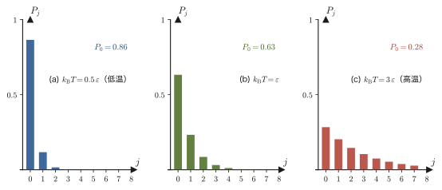
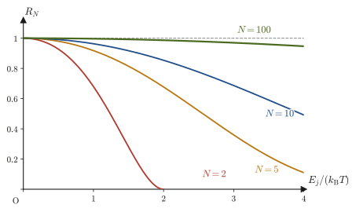
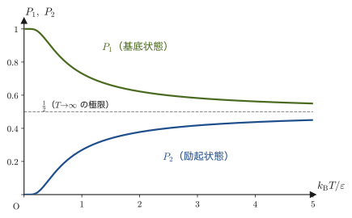
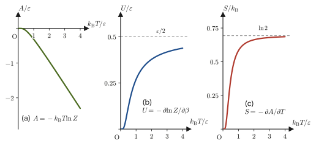
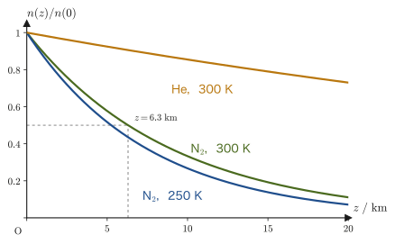
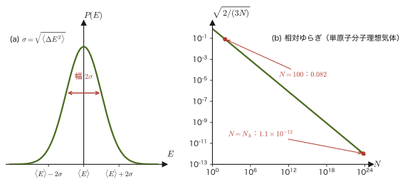
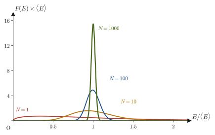
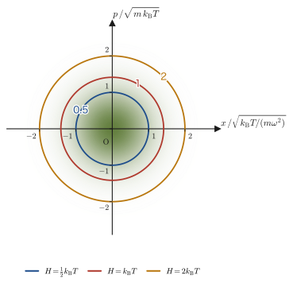
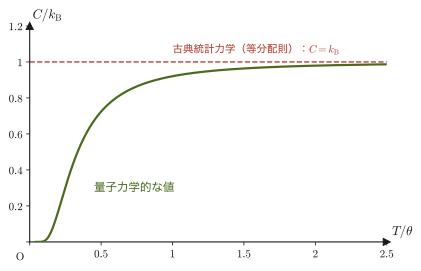

第50章カノニカル分布と分配関数
第48章では，外部とエネルギーのやりとりを一切しない孤立系を考え，「許された微視的状態はすべて等しい確率で実現する」という等重率の原理からミクロカノニカル分布を作った．けれども，私たちが実験室で扱う系の多くは孤立していない．コップの水は部屋の空気と熱をやりとりしながら室温に落ち着くし，フラスコの中の反応は恒温槽（サーモスタット）に浸されて一定の温度に保たれる．このように温度が一定に保たれた環境（熱浴）と接している系の確率分布が，この章の主役であるカノニカル分布（canonical distribution，正準分布）と，そこから生まれる分配関数（partition function）$Z$ である．
カノニカル分布の結論は驚くほど短い．エネルギー $E_j$ の状態が実現する確率は，$e^{-E_j/(k_{\mathrm B}T)}$ に比例する——たったこれだけである．しかし，統計力学の威力はここから始まる．ボルツマン因子の総和 $Z$ さえ計算できれば，平均エネルギー，自由エネルギー，エントロピー，圧力，比熱など，熱力学のあらゆる量が，$Z$ を微分するだけで機械的に取り出せてしまう．この章では，(1) ボルツマン因子が熱浴との相互作用から自然に出てくること，(2) 分配関数から熱力学量を取り出す処方箋，(3) 気体分子の高度分布（気圧の高度分布）とマクスウェルの速度分布をこの新しい道具で導き直すと，力のつり合いや気体分子運動論という，まったく別の道筋で得た結果と一致すること，(4) エネルギーのゆらぎが熱容量で決まり，粒子数 $N$ が大きいほど $1/\sqrt N$ で小さくなるため，孤立系（第48章）と熱浴に接した系（本章）が結局は同じ熱力学を与えること，(5) 高校で「気体分子の平均運動エネルギーは $\frac32k_{\mathrm B}T$」と覚える式の背後にある，「1自由度あたり $\frac12k_{\mathrm B}T$」という等分配則の一般的な証明，(6) ラグランジュの未定乗数法という別の道具からもボルツマン因子が出てくること，を順に学ぶ．
高校の物理では，気体分子の平均運動エネルギー $\frac32k_{\mathrm B}T$ や，温度が高いほど分子が活発に動くことを「公式」として覚えた．ここではそれらがすべて「確率が $e^{-E/(k_{\mathrm B}T)}$ に比例する」というただ1つの原理から導かれることを，微分と指数関数だけを使って確かめる．
- 熱浴と接する系のカノニカル分布と，分配関数 $Z=\sum_jg_je^{-\beta E_j}$（$\beta=1/(k_{\mathrm B}T)$，縮退度 $g_j$）の定義と意味
- 系と熱浴を合わせた孤立系に等重率の原理を使い，熱浴の状態数の対数 $\ln W_{\text{bath}}$ をテイラー展開（AD 02 第4章）して，ボルツマン因子を導く議論
- $\langle E\rangle=-\partial\ln Z/\partial\beta$，ヘルムホルツ自由エネルギー $A=-k_{\mathrm B}T\ln Z$，そこから $S$，$p$，$U$ を求める処方箋と，独立な系の分配関数が積になること
- 気体分子の高度分布（気圧の高度分布）とマクスウェルの速度分布則の再導出
- エネルギーのゆらぎ $\langle\Delta E^2\rangle=k_{\mathrm B}T^2C_V$ と，相対ゆらぎ $\propto1/\sqrt N$．ミクロカノニカル分布とカノニカル分布の等価性
- 等分配則（2次形式のエネルギーをもつ自由度1つあたり $\frac12k_{\mathrm B}T$）のガウス積分による一般的な証明と，デュロン＝プティの法則への応用，適用限界
- ラグランジュの未定乗数法（AD 02 第6章）で熱力学的重率 $W$ を最大にして，ボルツマン因子と分配関数を導く別の道筋
もとにしたノート：望月泰英『物理学ノート 統計力学』 p. 9．
50.1 カノニカル・アンサンブルとボルツマン因子
まず，これから何を考えるのかという舞台設定をはっきりさせよう．注目する系（たとえば，恒温槽に浸したフラスコの中の1個の分子や，結晶の格子点にある1個の原子）が，温度 $T\ [\mathrm K]$ に保たれた非常に大きな熱浴（周りの水・空気・結晶全体など）と接していて，熱浴とのあいだで自由にエネルギーをやりとりできるとする．このとき，注目する系は決まったエネルギーをもたず，測るたびに違う値をとりうる——部屋の温度が一定に保たれていても，室内の空気分子1個1個の運動エネルギーは絶えず変動しているのと同じである．
そこで，「系のエネルギーが，とびとびの値 $E_1,E_2,\ldots$（第48章で見たように，量子力学によれば系に許されるエネルギーは一般に離散的な値の集まりになる）のうち，どれになっている確率が高いのか」という問いが生まれる．これに答えるのがカノニカル分布である．以下では，エネルギー準位の存在は量子力学からの事実として認めつつ，微視的状態の数え方や粒子の運動は古典力学（位相空間）の言葉で扱う．このような立場の統計力学を古典統計力学（classical statistical mechanics）と呼ぶ．
イメージ：エネルギー準位とは何か
閉じた空間に閉じ込められた粒子は，波としてふるまうため，ギターの弦のように特定の波長の定在波しか許されず，エネルギーがとびとびの値になる．これがエネルギー準位（energy level）である．たとえば一辺 $L$ の箱に閉じ込められた質量 $m$ の粒子の準位は $\frac{h^2}{8mL^2}(n_x^2+n_y^2+n_z^2)$，調和振動子の準位は $\hbar\omega(n+\frac12)$ で与えられることが，量子力学から知られている（大学数学 第45章 45.3節，第46章 46.2節）．ここで $h=6.626\,070\,15\times10^{-34}\ \mathrm{J\,s}$ はプランク定数（Planck constant），$\hbar=h/(2\pi)$（エイチ・バー），$\omega$ は振動の角振動数（単位 $\mathrm{rad/s}$），$n_x,n_y,n_z=1,2,3,\ldots$ と $n=0,1,2,\ldots$ は，準位の番号を表す整数である．本書は量子力学そのものは扱わないので，こうした準位の形は「知られている事実」として与える．箱が大きい，あるいは粒子が重いと準位の間隔は非常に細かくなり，連続的とみなせる（50.4節）．
50.1.1 カノニカル・アンサンブルと分配関数
統計力学では，同じ条件のもとに置かれた同種の系を仮想的に無数に集めた集団を考え，その集団の中でどんな微視的状態がどれだけの割合で現れるかを調べる．この集団をアンサンブル（ensemble，集団）と呼ぶ．「温度 $T$ の熱浴と接している」という条件のもとに置かれた系の集団をカノニカル・アンサンブル（canonical ensemble，正準集団）と呼ぶ．これに対し，第48章で学んだ「孤立系（外部とエネルギーのやりとりが一切ない）の集団」はミクロカノニカル・アンサンブル（microcanonical ensemble，小正準集団）である（表50.1）．名前の対応（ミクロ＝微小，カノニカル＝正準）は歴史的な命名にすぎず，深く詮索する必要はない．なお，表50.1 に現れる $\langle E\rangle$（エネルギーの平均値，期待値．記号 $\langle\ \rangle$ は「アンサンブルにわたる平均」を表す）は，50.3.1項で確率を使って正確に定義する．
| ミクロカノニカル | カノニカル | |
|---|---|---|
| 系のおかれた条件 | 孤立している（$E,V,N$ 一定） | 温度 $T$ の熱浴と接している（$T,V,N$ 一定） |
| 系のエネルギー | 一定（$E\le E_j\le E+\Delta E$） | ゆらぐ（平均 $\langle E\rangle$ が $T$ で決まる） |
| 微視的状態の確率 | すべて等しい（$1/W$） | エネルギー $E_j$ の状態は $e^{-E_j/(k_{\mathrm B}T)}$ に比例 |
系がとりうるエネルギーの値を $E_j$（$j=1,2,\ldots,n$．準位が無限個あるときは $n\to\infty$）とし，同じエネルギー $E_j$ をもつ微視的状態が複数あるとき，その個数を $g_j$ と書いて縮退度（degeneracy）と呼ぶ．たとえば $g_j=1$ なら，エネルギー $E_j$ に対応する微視的状態はただ1つしかない（縮退がない）．注目する系（系＋熱浴という全体のうち，注目する側の部分系）のエネルギーが $E_j$ である確率を $P_j$ と書くと，カノニカル・アンサンブルでは次の形になる．
法則50.1 カノニカル分布とボルツマン因子
温度 $T$ の熱浴と接して熱平衡にある系のエネルギーが $E_j$（縮退度 $g_j$）である確率 $P_j$ は，
\begin{equation} P_j=\frac{g_j\,e^{-E_j/(k_{\mathrm B}T)}}{\displaystyle\sum_{j'} g_{j'}\,e^{-E_{j'}/(k_{\mathrm B}T)}} \label{eq:50-Pj} \end{equation}と表される．ここで $k_{\mathrm B}=1.380\,649\times10^{-23}\ \mathrm{J/K}$ はボルツマン定数（第49章の $S=k_{\mathrm B}\ln W$ に現れるのと同じ定数）である．指数関数 $e^{-E_j/(k_{\mathrm B}T)}$ をボルツマン因子（Boltzmann factor）と呼ぶ．
この法則がなぜ成り立つのかは，次の50.2節で第48・49章の道具を使って一から導く．この節では，まず結果の形が何を言っているかを確かめておこう．
定義50.1 分配関数
式 \eqref{eq:50-Pj} の分母の和
\begin{equation} Z\equiv\sum_{j} g_j\,e^{-E_j/(k_{\mathrm B}T)} \label{eq:50-Z} \end{equation}を分配関数（partition function）という．ドイツ語の Zustandssumme（「状態の和」）の頭文字 $Z$ で表す．
例50.1 縮退はどこから生じるか
縮退度 $g_j\gt1$ は，系に「対等な向き」があるとき自然に現れる．(i) 箱の中の粒子：一辺 $L$ の立方体の箱の中の質量 $m$ の粒子の準位は $E=\varepsilon_0(n_x^2+n_y^2+n_z^2)$，$\varepsilon_0\equiv h^2/(8mL^2)$ である．$(n_x,n_y,n_z)=(1,1,1)$ は $E=3\varepsilon_0$ でほかに同じ和になる組がないから $g=1$．$(2,1,1),\ (1,2,1),\ (1,1,2)$ の3つの組はどれも $4+1+1=6$ で，同じ $E=6\varepsilon_0$ をもつので $g=3$．その次は $(2,2,1)$ とその並べ替え $(2,1,2),(1,2,2)$ の $9\varepsilon_0$（$g=3$），$(3,1,1)$ とその並べ替えの $11\varepsilon_0$（$g=3$），$(2,2,2)$ だけの $12\varepsilon_0$（$g=1$）と続く．$x,y,z$ の3方向が対等（等方的）だから，方向を入れ替えても同じエネルギーになる状態が複数できるのである．箱を直方体（3辺の長さが異なる）にして方向の対等さをこわすと，この縮退は解ける．(ii) 水素原子：主量子数 $n$ の準位にはスピンも含めて $2n^2$ 個の状態がある（$n=1$ で $g=2$，$n=2$ で $g=8$）．(iii) スピン $\frac12$ の電子：磁場がない（$B=0$）ときは，スピンの向き（上向き・下向き）でエネルギーが等しく $g=2$ である（磁場をかけると2つの準位に分かれ，それぞれ $g=1$ になる．第51章の常磁性）．
分配関数を使うと，式 \eqref{eq:50-Pj} は $P_j=g_je^{-E_j/(k_{\mathrm B}T)}/Z$ と簡潔に書ける．$Z$ は，全確率の和を 1 にするための規格化定数である．実際，
$$ \sum_jP_j=\frac1Z\sum_jg_je^{-E_j/(k_{\mathrm B}T)}=\frac ZZ=1 $$となって，確率の条件（大学数学 第13章 13.4節）が自動的に満たされる．
注意：分母の和の添字は，分子の $j$ とは別のもの
式 \eqref{eq:50-Pj} の分子にある $j$ は「いま確率を知りたい特定の準位」を指す．分母の和は「すべての準位についての和」であり，和の中を動く添字は，特定の準位 $j$ とは無関係なダミーの添字である．混同しないように，本書の式 \eqref{eq:50-Pj} では分母の添字を $j'$ と書き分けた．$Z$ の定義式 \eqref{eq:50-Z} のように，$P_j$ と別に単独で書くときは，どんな文字を使っても同じ意味になる（$\sum_jg_je^{-\beta E_j}=\sum_kg_ke^{-\beta E_k}$）ので，$j$ と書いてかまわない．
イメージ：ボルツマン因子は何を言っているか
ボルツマン因子 $e^{-E_j/(k_{\mathrm B}T)}$ は，$E_j$ が大きいほど（指数の肩が大きな負の数になるので）小さい値になる．つまり式 \eqref{eq:50-Pj} は「エネルギーが高い状態ほど実現しにくい」という，直感的にも納得できる主張をしている．さらに，$T$ が小さいほど $E_j/(k_{\mathrm B}T)$ は（同じ $E_j$ に対して）大きくなるので，低温になるほど偏りが強まり，エネルギーの低い状態に確率が集中する．逆に $T$ が大きいと $E_j/(k_{\mathrm B}T)$ は小さくなり，すべての準位がほぼ同じ確率に近づく．「熱く揺さぶられた系は，エネルギーの高低にかかわらずいろいろな状態に散らばりやすくなり，冷えた系は最も落ち着いた（エネルギーの低い）状態に集中する」という日常の直感が，式 \eqref{eq:50-Pj} の中に定量的に表現されている．
50.1.2 温度によるボルツマン分布の変化
準位が等間隔に並んでいる系で，3つの温度について確率 $P_j$ を棒グラフにしたものが図50.1である．この例に限り，見やすさのために準位の番号を $j=0$ から始め，$E_j=j\varepsilon$（$j=0,1,2,\ldots$，縮退なし，準位は無限個）とする（基底状態が $j=0$ になる．一般論の $j=1$ 始まりとは異なるので注意）．低温（$k_{\mathrm B}T=0.5\,\varepsilon$）ではほとんど基底状態（$j=0$）にいるが，温度が上がるにつれて分布が右（高いエネルギー）へ裾を伸ばしていく．どの温度でも，$P_j$ は $j$ について等比数列になる（$P_{j+1}/P_j=e^{-\varepsilon/(k_{\mathrm B}T)}$ が一定）ことが，グラフが「指数関数的に減少する」形に見える理由である．公比 $r=e^{-\varepsilon/(k_{\mathrm B}T)}\lt1$ の無限等比級数の和の公式 $\sum_{j=0}^\infty r^j=1/(1-r)$ を使うと，$Z=1/(1-r)$，すなわち $P_j=(1-r)\,r^j$ となる．たとえば $k_{\mathrm B}T=3\,\varepsilon$ では $P_0=1-e^{-1/3}=0.283$ である．

低温と高温の極限は，式そのものから読み取れる（ここからは一般論の番号 $j=1,2,\ldots,n$ に戻る）．$T\to0$ のとき，最低の準位（基底状態，エネルギー $E_1$）だけが残って $Z\to g_1e^{-E_1/(k_{\mathrm B}T)}$ となり，$P_1\to1$，ほかの $P_j\to0$ である．$T\to\infty$ のとき，すべての指数関数が $e^0=1$ に近づき，準位が有限個（$n$ 個）のときは $P_j\to g_j/\sum_{j'}g_{j'}$ となる（縮退度の比だけが残る＝すべての微視的状態が等確率になる）．準位が無限個の場合（上の等間隔準位や調和振動子）は $\sum_{j'}g_{j'}$ が発散するので，この形の極限にはならず，$T$ が高いほど確率がどこまでも高い準位に広がっていく．
例題50.1 縮退のない2準位系のボルツマン因子
ある系が，縮退のない（$g_1=g_2=1$）2つのエネルギー準位 $E_1=0$，$E_2=\varepsilon$（$\varepsilon\gt0$）だけをとりうるとする．この系が温度 $T$ の熱浴と接しているとき，(a) 分配関数 $Z$ を求めよ．(b) 確率 $P_1,P_2$ を求めよ．(c) $T\to0$ と $T\to\infty$ で $P_1,P_2$ がどうなるか答えよ．(d) $k_{\mathrm B}T/\varepsilon=0.1,\ 0.5,\ 1,\ 3,\ 10$ のときの $P_2$ を表にせよ．
解答 (a) 式 \eqref{eq:50-Z} に $g_1=g_2=1$，$E_1=0$，$E_2=\varepsilon$ を代入すると，
$$ Z=g_1e^{-E_1/(k_{\mathrm B}T)}+g_2e^{-E_2/(k_{\mathrm B}T)}=e^{0}+e^{-\varepsilon/(k_{\mathrm B}T)}=1+e^{-\varepsilon/(k_{\mathrm B}T)} $$(b) 式 \eqref{eq:50-Pj} より，
$$ P_1=\frac{1}{Z}=\frac{1}{1+e^{-\varepsilon/(k_{\mathrm B}T)}},\qquad P_2=\frac{e^{-\varepsilon/(k_{\mathrm B}T)}}{Z}=\frac{e^{-\varepsilon/(k_{\mathrm B}T)}}{1+e^{-\varepsilon/(k_{\mathrm B}T)}} $$（$P_1+P_2=1$ になっていることに注意．）
(c) $T\to0^+$（$k_{\mathrm B}T\to0$）のとき，$\varepsilon/(k_{\mathrm B}T)\to+\infty$ なので $e^{-\varepsilon/(k_{\mathrm B}T)}\to0$．したがって $P_1\to1$，$P_2\to0$——低温では，系はほぼ確実にエネルギーの低い基底状態（$E_1=0$）にいる．一方，$T\to\infty$ のとき $\varepsilon/(k_{\mathrm B}T)\to0$ なので $e^{-\varepsilon/(k_{\mathrm B}T)}\to1$，よって $P_1\to\frac12$，$P_2\to\frac12$——高温では2つの準位はほぼ等確率になる．
(d) $x\equiv\varepsilon/(k_{\mathrm B}T)$ とおくと $P_2=e^{-x}/(1+e^{-x})=1/(e^{x}+1)$ である．各温度での値は次のとおり（表50.2）．
| $k_{\mathrm B}T/\varepsilon$ | $x=\varepsilon/(k_{\mathrm B}T)$ | $P_2=1/(e^x+1)$ |
|---|---|---|
| $0.1$ | $10$ | $4.5\times10^{-5}$ |
| $0.5$ | $2$ | $0.119$ |
| $1$ | $1$ | $0.269$ |
| $3$ | $1/3$ | $0.417$ |
| $10$ | $0.1$ | $0.475$ |
$P_2$ が $T$ とともに $0$ から $1/2$ へ単調に増えていく様子が読み取れる（図50.4に連続的なグラフを示す）．この2準位系は，本章を通じて具体的な計算例として繰り返し使う．
例題50.2 縮退のある準位——最も確率の高い準位は基底状態とは限らない
3つのエネルギー準位 $E_1=0\ (g_1=1)$，$E_2=\varepsilon\ (g_2=3)$，$E_3=2\varepsilon\ (g_3=5)$ をもつ系が，$k_{\mathrm B}T=\varepsilon$ の熱浴と接している．(a) 分配関数 $Z$，(b) 各準位に見いだされる確率 $P_1,P_2,P_3$，(c) 準位 $E_2$ の中の1つの微視的状態が実現する確率と，基底状態が実現する確率の比，を求めよ．
解答 (a) $\beta\varepsilon=\varepsilon/(k_{\mathrm B}T)=1$ なので，式 \eqref{eq:50-Z} より
$$ Z=1\cdot e^{0}+3e^{-1}+5e^{-2}=1+3\times0.36788+5\times0.13534=1+1.10364+0.67668=2.7803 $$(b) 各準位の確率は $P_j=g_je^{-E_j/(k_{\mathrm B}T)}/Z$ より，
$$ P_1=\frac{1}{2.7803}=0.360,\qquad P_2=\frac{1.10364}{2.7803}=0.397,\qquad P_3=\frac{0.67668}{2.7803}=0.243 $$（和は $0.360+0.397+0.243=1.000$ になる．）確率が最大なのは，エネルギーが最低の $E_1$ ではなく，$E_2$ である．縮退度 $g_2=3$ が大きいので，「その準位に入る微視的状態の数」が多く，準位ごとの確率に $g_j$ の重みが掛かるからである．
(c) 準位 $E_2$ の3つの微視的状態のうちの特定の1つが実現する確率は $e^{-1}/Z=0.36788/2.7803=0.132$，基底状態（1つしかない）が実現する確率は $1/Z=0.360$ であり，その比は $e^{-1}=0.368$ である．すなわち，微視的状態1つ1つの確率は，エネルギーが低いほうが大きい——ボルツマン因子の本来の主張どおりである．準位の確率 $P_j$ と微視的状態1つの確率 $P_j/g_j$ を区別することが，縮退のある系を扱うときの大切な注意点である．なお，ほかの条件を変えずに $g_2$ を2倍にすると，比 $P_2/P_1=(g_2/g_1)e^{-\varepsilon/(k_{\mathrm B}T)}$ は2倍になる．
応用：室温の $k_{\mathrm B}T$ とボルツマン因子の大きさ
室温（$T=300\ \mathrm K$）で $k_{\mathrm B}T=1.380649\times10^{-23}\times300=4.14\times10^{-21}\ \mathrm J=0.0259\ \mathrm{eV}$ である（$1\ \mathrm{eV}=1.602\,176\,634\times10^{-19}\ \mathrm J$）．エネルギー差 $\varepsilon$ の励起が熱で起こる確率の目安は $e^{-\varepsilon/(k_{\mathrm B}T)}$ である．たとえば $\varepsilon=0.1\ \mathrm{eV}$ なら $e^{-3.87}\approx0.021$（2％程度），半導体のシリコンのバンドギャップ程度の $\varepsilon=1.1\ \mathrm{eV}$ なら $e^{-42.5}\approx3\times10^{-19}$ とほとんど起こらない．「$k_{\mathrm B}T$ より十分小さい励起は頻繁に起こり，十分大きい励起はほとんど起こらない」というのが，材料中の欠陥生成・拡散・電子の熱励起などを見積もるときの基本的な目安になる．
この先の見通しを立てておこう．次の50.2節では，式 \eqref{eq:50-Pj} がなぜ正しいのかを，系と熱浴からなる孤立複合系に等重率の原理（第48章）を適用して導く．50.3節では，分配関数 $Z$ から平均エネルギー・自由エネルギー・エントロピー・圧力を計算する一般的な方法を作る．50.4節ではそれを気体分子の高度分布とマクスウェルの速度分布に応用し，50.5節ではエネルギーのゆらぎを調べ，50.6節でミクロカノニカル分布との関係を確認する．50.7節では等分配則という一般定理を証明し，最後に50.8節で，ラグランジュの未定乗数法というまったく別の道具からも同じボルツマン因子にたどり着けることを見る．
50.2 系と熱浴 — ボルツマン因子の導出
それでは，法則50.1（ボルツマン因子の形）を導こう．力学では，注目する物体（系）と，そのまわりの世界（外界）とを分けて考えた．統計力学でも同じように，注目する系と，そのまわりの非常に大きな熱浴（heat bath，温度 $T$ の恒温槽）とに分ける．鍵になるのは，「注目する系そのものは孤立していなくても，系＋熱浴を合わせた全体は孤立系とみなせる」という視点である．孤立系については，第48章で学んだ等重率の原理——許されたすべての微視的状態は等しい確率で実現する——がそのまま使える．
50.2.1 系＋熱浴という複合系
注目する系（系 S）と，非常に大きな熱浴を接触させ，両者のあいだで自由にエネルギーがやりとりできるようにする．系Sと熱浴を合わせた全体は外部から完全に孤立しており，全エネルギー $E_{\text{tot}}$（一定）をもつとする．系Sと熱浴のあいだの相互作用のエネルギーは，それぞれのエネルギーに比べて無視できるほど小さい（弱い接触）と考えて，全エネルギーは $E_{\text{tot}}=(\text{系Sのエネルギー})+(\text{熱浴のエネルギー})$ と書けるものとする（図50.2）．系Sのエネルギーが，とびとびの値 $E_j$（縮退度 $g_j$）のどれかであるとき，熱浴のエネルギーはその残り $E_{\text{tot}}-E_j$ になる．
熱浴の微視的状態の数を表す記号を決めておこう．第49章の法則49.1（ボルツマンの原理）では，エネルギーが $E$ から $E+\Delta E$ の範囲（エネルギー殻）にある微視的状態の数を $W$ とおいて $S=k_{\mathrm B}\ln W$ と書いた．熱浴についても同じ意味で，エネルギーが $E$ から $E+\Delta E$ の殻に入る熱浴の微視的状態の数を $W_{\text{bath}}(E)$ と書く（幅 $\Delta E$ は $E$ によらず一定にとる）．第49章の記法（定義49.1）では，この殻の中の状態数は「状態の密度」$W(E)=\dd\Omega/\dd E$ を使って $W(E)\,\Delta E$ と書かれていた．以下では $\Delta E$ を一定に固定して，殻の状態数を単に $W(E)$（$W_{\text{bath}}(E)$）と書く．$\Delta E$ は比や対数の $E$ 微分では約分・消去される定数なので，結果には影響しない．すると，熱浴のエントロピーは
$$ S_{\text{bath}}(E)=k_{\mathrm B}\ln W_{\text{bath}}(E) $$である．
全体（系S＋熱浴）は孤立系だから，等重率の原理（法則48.2）により，全体のどの微視的状態も等しい確率で実現する．したがって，「系Sのエネルギーが $E_j$ である」という事象が実現する確率 $P_j$ は，それに対応する全体の微視的状態の数に比例する．系Sの側でエネルギー $E_j$ に対応する微視的状態は $g_j$ 個あり，そのそれぞれについて，熱浴の側は $W_{\text{bath}}(E_{\text{tot}}-E_j)$ 個の微視的状態のどれをとってもよい．系Sの1つの状態と熱浴の1つの状態を組み合わせるごとに，全体の異なる1つの微視的状態ができるので（場合の数の積の法則），全体の微視的状態のうち「系Sのエネルギーが $E_j$」に対応するものの数は $g_j\,W_{\text{bath}}(E_{\text{tot}}-E_j)$ 個である．よって
\begin{equation} P_j\propto g_j\,W_{\text{bath}}(E_{\text{tot}}-E_j) \label{eq:50-Pj-propto-W} \end{equation}が成り立つ（比例定数は，$\sum_jP_j=1$ という規格化条件から後で決める）．残る仕事は，$W_{\text{bath}}(E_{\text{tot}}-E_j)$ が $E_j$ の関数としてどんな形をしているかを調べることである．
50.2.2 熱浴の状態数の対数のテイラー展開
$W_{\text{bath}}(E_{\text{tot}}-E_j)$ をそのまま扱うのは難しいので，対数をとった
$$ \varphi(E)\equiv\ln W_{\text{bath}}(E) $$（$\varphi$ は「ファイ」と読むギリシャ文字）を考える．熱浴のエネルギー $E_{\text{tot}}$ に比べて，系Sのエネルギー $E_j$ はずっと小さい（$E_j\ll E_{\text{tot}}$）ので，$\varphi(E_{\text{tot}}-E_j)$ を $E_j=0$ のまわりでテイラー展開できる．テイラーの定理（大学数学 第4章 4.1節）は，関数 $f(a+h)$ を $h$ の小さい量として展開する公式
$$ f(a+h)=f(a)+h f'(a)+\frac{h^2}{2!}f''(a)+\cdots $$である．$f=\varphi$，$a=E_{\text{tot}}$，$h=-E_j$ とおくと，$h$ の奇数乗にはマイナス符号が付き，偶数乗では符号が変わらないので，
\begin{equation} \begin{aligned} \varphi(E_{\text{tot}}-E_j) &=\varphi(E_{\text{tot}})+(-E_j)\,\varphi'(E_{\text{tot}})+\frac{(-E_j)^2}{2!}\,\varphi''(E_{\text{tot}})+\cdots\\ &=\varphi(E_{\text{tot}})-E_j\,\varphi'(E_{\text{tot}})+\frac{E_j^2}{2}\,\varphi''(E_{\text{tot}})-\cdots \end{aligned} \label{eq:50-taylor-phi} \end{equation}が得られる．ここで $\varphi'(E_{\text{tot}})=\left.\dfrac{\partial\ln W_{\text{bath}}}{\partial E}\right|_{E_{\text{tot}}}$ である．
この1階微分は，第49章のボルツマンの原理から決まる．$S_{\text{bath}}=k_{\mathrm B}\ln W_{\text{bath}}=k_{\mathrm B}\varphi$ を $E$ で微分すると $\partial\varphi/\partial E=(1/k_{\mathrm B})\,\partial S_{\text{bath}}/\partial E$ であり，熱力学第1法則 $\dd E=T\dd S-p\dd V$ から体積一定のとき $\dd E=T\dd S$，すなわち $(\partial S/\partial E)_V=1/T$（第49章 49.2節で使った関係）が成り立つ．したがって
$$ \frac{\partial\ln W_{\text{bath}}}{\partial E}=\frac{1}{k_{\mathrm B}}\left(\frac{\partial S_{\text{bath}}}{\partial E}\right)_V=\frac{1}{k_{\mathrm B}T_{\text{bath}}} $$である．ここで記号 $\partial$（ラウンド・ディー）は偏微分（partial derivative）を表す．多くの変数をもつ量のうち，1つだけを動かして，ほかは固定したまま微分するという意味である（大学数学 第6章）．添字 $V$ は体積を一定に保つことを表し，$(\partial S/\partial E)_V$ は「体積を変えずにエネルギー $E$ だけを動かしたときの，エントロピー $S$ の変化率」である．熱浴は非常に大きいので，系Sとエネルギーをやりとりしても熱浴自身の温度 $T_{\text{bath}}$ はほとんど変わらず，熱平衡にある系Sの温度 $T$ に等しいとみなせる．よって
\begin{equation} \varphi'(E_{\text{tot}})=\frac{\partial\ln W_{\text{bath}}}{\partial E}\bigg|_{E_{\text{tot}}}=\frac{1}{k_{\mathrm B}T} \label{eq:50-phi-prime} \end{equation}となる．「熱浴が非常に大きい」という仮定が，この式では「熱浴の温度が変化しない」という形で効いている．
なぜ：$W_{\text{bath}}$ そのものではなく，その対数を展開するのか
単原子分子理想気体の熱浴（分子数 $N_{\text{bath}}$）では，第49章で見たように $W_{\text{bath}}(E)\propto E^{3N_{\text{bath}}/2-1}$ であり，指数は $10^{23}$ 程度にもなる．そのため，$E$ がほんの少し変わるだけで $W_{\text{bath}}$ は途方もない倍率で変化する．$W_{\text{bath}}$ を1次までテイラー展開すると $W_{\text{bath}}(E_{\text{tot}}-E_j)\approx W_{\text{bath}}(E_{\text{tot}})\,(1-E_j/(k_{\mathrm B}T))$ となるが，これは $E_j\ll k_{\mathrm B}T$ のときしか使えない．ところが対数 $\ln W_{\text{bath}}$ は $E$ のゆるやかな関数（理想気体なら $\frac{3N}{2}\ln E$）なので，1次までの展開が $E_j$ が $k_{\mathrm B}T$ の何倍かになっても正確に成り立つ．「変化が急激な量は，対数をとって穏やかな量にしてから展開する」というのは，物理でも数学でも頻繁に使われる大切な工夫である．
注意：2次以降の項が無視できる理由
式 \eqref{eq:50-taylor-phi} の2次の項に現れる $\varphi''(E_{\text{tot}})$ は，$\varphi'=1/(k_{\mathrm B}T_{\text{bath}})$ をもう一度 $E$ で微分したものである．合成関数の微分により
$$ \varphi''(E)=\frac{\partial}{\partial E}\left(\frac{1}{k_{\mathrm B}T_{\text{bath}}}\right)=-\frac{1}{k_{\mathrm B}T_{\text{bath}}^2}\,\frac{\partial T_{\text{bath}}}{\partial E}=-\frac{1}{k_{\mathrm B}T_{\text{bath}}^2C_{V,\text{bath}}} $$となる．ここで $\partial T_{\text{bath}}/\partial E=1/C_{V,\text{bath}}$（熱浴の定積熱容量 $C_{V,\text{bath}}=(\partial E/\partial T)_V$ の逆数．同じエネルギーを受け取っても，熱容量が大きいほど温度は変わらない）を使った．熱浴が「非常に大きい」ということは，熱容量が熱浴の粒子数 $N_{\text{bath}}$ に比例して際限なく大きくなること（熱容量の示量性，第27章 27.2節）を意味する．したがって $\varphi''(E_{\text{tot}})\propto1/N_{\text{bath}}\to0$ となり，式 \eqref{eq:50-taylor-phi} の2次以降の項は，熱浴が大きい極限で1次の項に比べて無視できる．
例題50.3 テイラー展開の2次の項の大きさを見積もる
熱浴が，$N_{\text{bath}}$ 個の単原子分子からなる理想気体であるとする（熱容量は $C_{V,\text{bath}}=\frac32N_{\text{bath}}k_{\mathrm B}$．50.7節で等分配則から証明する）．系Sのエネルギー $E_j$ が $E_j\sim k_{\mathrm B}T$ 程度だとして，式 \eqref{eq:50-taylor-phi} の2次の項の1次の項に対する比のオーダーを求めよ．$N_{\text{bath}}=N_{\mathrm A}=6.022\times10^{23}$ ではどうなるか．
解答 1次の項は $-E_j\varphi'(E_{\text{tot}})=-E_j/(k_{\mathrm B}T)$，2次の項は $\frac12E_j^2\varphi''(E_{\text{tot}})=-\dfrac{E_j^2}{2k_{\mathrm B}T^2C_{V,\text{bath}}}$ である．両者の比の大きさは，
$$ \left|\frac{\text{2次の項}}{\text{1次の項}}\right| =\frac{E_j^2/(2k_{\mathrm B}T^2C_{V,\text{bath}})}{E_j/(k_{\mathrm B}T)} =\frac{E_j}{2\,T\,C_{V,\text{bath}}} =\frac{E_j}{2T\cdot\frac32N_{\text{bath}}k_{\mathrm B}} =\frac{E_j}{3N_{\text{bath}}k_{\mathrm B}T} $$（単位は $\mathrm{J}/(\mathrm K\cdot\mathrm{J/K})$ で無次元）．$E_j\sim k_{\mathrm B}T$ を代入すると，比は $\sim1/(3N_{\text{bath}})$ のオーダーになる．$N_{\text{bath}}=N_{\mathrm A}$ なら $1/(3\times6.022\times10^{23})=5.5\times10^{-25}$ という，きわめて小さい値である．したがって，マクロな熱浴（原子数 $\sim10^{23}$ 個）であれば，1次までのテイラー展開は，事実上，厳密と言ってよい近似になる．
50.2.3 ボルツマン因子の完成
導出：法則50.1（ボルツマン因子）
式 \eqref{eq:50-phi-prime} を式 \eqref{eq:50-taylor-phi} に代入し，2次以降の項を無視すると，
$$ \varphi(E_{\text{tot}}-E_j)\approx\varphi(E_{\text{tot}})-\frac{E_j}{k_{\mathrm B}T} $$となる．両辺の指数関数をとると（$\varphi=\ln W_{\text{bath}}$ だったから $W_{\text{bath}}=e^{\varphi}$），指数法則 $e^{a-b}=e^ae^{-b}$ により，
$$ W_{\text{bath}}(E_{\text{tot}}-E_j)=e^{\varphi(E_{\text{tot}}-E_j)}\approx e^{\varphi(E_{\text{tot}})-E_j/(k_{\mathrm B}T)}=\underbrace{e^{\varphi(E_{\text{tot}})}}_{=\,W_{\text{bath}}(E_{\text{tot}})}\cdot e^{-E_j/(k_{\mathrm B}T)} $$を得る．これを式 \eqref{eq:50-Pj-propto-W} に代入すると，
$$ P_j\propto g_j\,W_{\text{bath}}(E_{\text{tot}})\,e^{-E_j/(k_{\mathrm B}T)} $$となるが，$W_{\text{bath}}(E_{\text{tot}})$ は $j$ によらない（全エネルギー $E_{\text{tot}}$ だけで決まる）定数なので，比例定数に吸収できる：
\begin{equation} P_j\propto g_j\,e^{-E_j/(k_{\mathrm B}T)} \label{eq:50-boltzmann-factor} \end{equation}比例定数は規格化条件 $\sum_jP_j=1$ から決まる．$P_j=C\,g_je^{-E_j/(k_{\mathrm B}T)}$（$C$ は定数）とおいて $\sum_jP_j=1$ を要求すると，$C\sum_jg_je^{-E_j/(k_{\mathrm B}T)}=1$，すなわち $C=1/\sum_jg_je^{-E_j/(k_{\mathrm B}T)}=1/Z$ である．これは式 \eqref{eq:50-Pj}・\eqref{eq:50-Z} そのものである．
こうして，(i) 系＋熱浴の全体に等重率の原理を適用し，(ii) 熱浴の状態数の対数を，系のエネルギー（熱浴のエネルギーに比べて十分小さい）についてテイラー展開して1次までとる，という2つの手順だけから，カノニカル分布のボルツマン因子が導かれた．
（導出終わり）
今後の式をすっきりさせるため，温度の逆数に比例する量として
\begin{equation} \beta\equiv\frac{1}{k_{\mathrm B}T} \label{eq:50-beta-def} \end{equation}を導入する（逆温度，inverse temperature．単位は $\mathrm{J^{-1}}$）．$\beta$ を使うと，$P_j=g_je^{-\beta E_j}/Z$，$Z=\sum_jg_je^{-\beta E_j}$ と，指数の肩がすっきりした形に書ける．統計力学では $T$ の代わりに $\beta$ を独立変数として扱うと，次の50.3節で見るように微分の計算が見通しよくなる．本章では必要に応じて $T$ と $\beta$ の両方を使う．
例題50.4 理想気体の熱浴：べき乗が指数関数になる
熱浴が $N$ 個の単原子分子からなる理想気体のとき，第49章の結果 $W_{\text{bath}}(E)\propto E^{\nu}$，$\nu=\frac{3N}{2}-1$ から出発して，比 $W_{\text{bath}}(E_{\text{tot}}-E_j)/W_{\text{bath}}(E_{\text{tot}})$ が $N\to\infty$ で $e^{-E_j/(k_{\mathrm B}T)}$ に近づくことを示せ．また，$x=E_j/(k_{\mathrm B}T)=1$ と $3$ のとき，厳密な比が $e^{-x}$ からどれだけずれるかを $N=10,100$ で数値的に求めよ．
解答 $\ln W_{\text{bath}}=\nu\ln E+(\text{定数})$ を $E$ で微分すると $\varphi'(E)=\nu/E$ であり，式 \eqref{eq:50-phi-prime} より $\nu/E_{\text{tot}}=1/(k_{\mathrm B}T)$，すなわち $E_{\text{tot}}=\nu k_{\mathrm B}T$ である（$N$ が大きければ $\frac32Nk_{\mathrm B}T$ に一致する）．比は，
$$ \frac{W_{\text{bath}}(E_{\text{tot}}-E_j)}{W_{\text{bath}}(E_{\text{tot}})}=\left(\frac{E_{\text{tot}}-E_j}{E_{\text{tot}}}\right)^{\nu}=\left(1-\frac{E_j}{\nu k_{\mathrm B}T}\right)^{\nu}=\left(1-\frac{x}{\nu}\right)^{\nu} $$となる．$\nu\to\infty$ のとき，$\left(1-\dfrac{x}{\nu}\right)^{\nu}\to e^{-x}$ である（ネイピア数の定義 $\lim_{n\to\infty}(1+a/n)^n=e^a$ で $a=-x$）．つまり，べき乗 $E^\nu$ のふるまいが，熱浴が大きい極限で指数関数 $e^{-E_j/(k_{\mathrm B}T)}$ に変わる．
ずれの大きさを見るため，比 $R_N(x)=(1-x/\nu)^{\nu}\big/e^{-x}$ を計算する（図50.3）．$N=10$（$\nu=14$）では，$(1-\tfrac1{14})^{14}=e^{14\ln(13/14)}=e^{-1.0375}=0.3543$ に $e=2.7183$ を掛けて $R_{10}(1)=0.963$，$(1-\tfrac3{14})^{14}=e^{14\ln(11/14)}=e^{-3.3762}=0.03417$ に $e^3=20.086$ を掛けて $R_{10}(3)=0.686$ となる．$N=100$（$\nu=149$）では $R_{100}(1)=0.9966$，$R_{100}(3)=0.970$ である．分子が100個の気体でも，$E_j=3k_{\mathrm B}T$ で3％程度のずれしかない．$N\sim10^{23}$ では，ずれは $x^2/(2\nu)\sim10^{-23}$ のオーダーであり，まったく問題にならない．

50.3 分配関数と，そこから求まる物理量
分配関数 $Z=\sum_jg_je^{-\beta E_j}$（$\beta=1/(k_{\mathrm B}T)$）さえ計算できれば，そこから系のあらゆる熱力学的な量——平均エネルギー，自由エネルギー，エントロピー，圧力，熱容量——が，微分するだけで機械的に取り出せる．これが分配関数の威力である．本節では，その取り出し方を順に確立する．
50.3.1 平均エネルギー $\langle E\rangle=-\partial\ln Z/\partial\beta$
系のエネルギーの平均値（期待値，大学数学 第14章 14.1節）は，確率 $P_j$ で重みをつけた和
$$ \langle E\rangle=\sum_jE_jP_j=\sum_jE_j\,\frac{g_je^{-\beta E_j}}{Z}=\frac{1}{Z}\sum_jE_jg_je^{-\beta E_j} $$である．この和 $\sum_jE_jg_je^{-\beta E_j}$ を，分配関数 $Z=\sum_jg_je^{-\beta E_j}$ を $\beta$ で微分したものと比べてみよう．和の微分は各項の微分の和であり（$E_j,g_j$ は $\beta$ によらない定数），指数関数の微分 $\dfrac{\partial}{\partial\beta}e^{-\beta E_j}=-E_je^{-\beta E_j}$ を使うと，
$$ \frac{\partial Z}{\partial\beta}=\sum_jg_j\frac{\partial}{\partial\beta}e^{-\beta E_j}=\sum_jg_j\cdot(-E_j)e^{-\beta E_j}=-\sum_jE_jg_je^{-\beta E_j} $$となる．したがって $\sum_jE_jg_je^{-\beta E_j}=-\partial Z/\partial\beta$ であり，
$$ \langle E\rangle=\frac{1}{Z}\left(-\frac{\partial Z}{\partial\beta}\right)=-\frac{1}{Z}\frac{\partial Z}{\partial\beta} $$を得る．合成関数の微分（対数微分）$\dfrac{\partial\ln Z}{\partial\beta}=\dfrac{1}{Z}\dfrac{\partial Z}{\partial\beta}$（$\ln Z$ を $Z$ の関数とみて連鎖律を使う）を使うと，右辺は $-\partial\ln Z/\partial\beta$ そのものである．
公式50.1 平均エネルギーの分配関数表示
\begin{equation} \langle E\rangle=-\frac{\partial\ln Z}{\partial\beta} \label{eq:50-mean-energy} \end{equation}この公式のありがたみは，個々の準位について和をとる面倒な計算をせずに，$Z$ を1回 $\beta$ で微分するだけで平均エネルギーが求まる点にある（50.5節で見るように，もう1回微分すればエネルギーのゆらぎまで求まる）．「対数をとってから微分する」という操作（対数微分，第47章 47.5節）は，高校数学にはあまり出てこないが，指数関数の和や積を扱うときに絶大な威力を発揮する．
熱力学（第IV部）の内部エネルギー $U$ は，系のエネルギーの平均値であるから，カノニカル分布では
$$ U=\langle E\rangle=-\frac{\partial\ln Z}{\partial\beta} $$とおく．
50.3.2 ヘルムホルツ自由エネルギー $A=-k_{\mathrm B}T\ln Z$
次に，熱力学で学んだヘルムホルツ自由エネルギー $A=U-TS$（第30章 30.4節．物理の教科書では $F$ と書くことが多いが，本書は第IV部と同じ $A$ を使う）を，分配関数から作る．第30章では，$A$ は巨視的な量 $U,T,S$ から定義された量（$U(S)$ を，$T=\partial U/\partial S$ を変数とする関数 $A(T)=U-TS$ に書き換える操作で，ルジャンドル変換と呼ばれる．名前は読み飛ばしてよい）で，$\dd A=-S\dd T-p\dd V$ を満たす．ここでは逆に，分配関数という微視的な量から出発して，同じ性質をもつ量を作る．
定義50.2 分配関数からのヘルムホルツ自由エネルギー
\begin{equation} A\equiv-k_{\mathrm B}T\ln Z=-\frac{1}{\beta}\ln Z \label{eq:50-A-def} \end{equation}この定義が熱力学と矛盾しないことを確かめよう．体積 $V$ を一定に保ったまま，$A$ を温度 $T$ で偏微分する．$Z$ は $\beta=1/(k_{\mathrm B}T)$ を通じて $T$ に依存する（準位 $E_j$ は $T$ によらない）ので，連鎖律を使って $\beta$ での微分に読み替える．$\dfrac{\dd\beta}{\dd T}=\dfrac{\dd}{\dd T}\left(\dfrac{1}{k_{\mathrm B}T}\right)=-\dfrac{1}{k_{\mathrm B}T^2}=-k_{\mathrm B}\beta^2$（$k_{\mathrm B}\beta^2=1/(k_{\mathrm B}T^2)$ を使った）である．
導出：$S=-(\partial A/\partial T)_V$ を計算する
連鎖律により $\left(\dfrac{\partial A}{\partial T}\right)_V=\left(\dfrac{\partial A}{\partial\beta}\right)_V\dfrac{\dd\beta}{\dd T}$ である．まず $\left(\dfrac{\partial A}{\partial\beta}\right)_V$ を求める．式 \eqref{eq:50-A-def} より $A=-\beta^{-1}\ln Z$ なので，積の微分公式と $\partial\beta^{-1}/\partial\beta=-\beta^{-2}$ を使って，
$$ \frac{\partial A}{\partial\beta}=-\left(\frac{\partial\beta^{-1}}{\partial\beta}\right)\ln Z-\beta^{-1}\frac{\partial\ln Z}{\partial\beta} =\frac{1}{\beta^2}\ln Z-\frac{1}{\beta}\frac{\partial\ln Z}{\partial\beta} $$となる．これに $\dd\beta/\dd T=-k_{\mathrm B}\beta^2$ を掛けると，
$$ \left(\frac{\partial A}{\partial T}\right)_V=\left[\frac{1}{\beta^2}\ln Z-\frac{1}{\beta}\frac{\partial\ln Z}{\partial\beta}\right]\times(-k_{\mathrm B}\beta^2) =-k_{\mathrm B}\ln Z+k_{\mathrm B}\beta\frac{\partial\ln Z}{\partial\beta} $$である．式 \eqref{eq:50-mean-energy}（$\partial\ln Z/\partial\beta=-\langle E\rangle$）と $k_{\mathrm B}\beta=1/T$ を使うと，$k_{\mathrm B}\beta(\partial\ln Z/\partial\beta)=-\langle E\rangle/T$ なので，
$$ \left(\frac{\partial A}{\partial T}\right)_V=-k_{\mathrm B}\ln Z-\frac{\langle E\rangle}{T} $$符号を反転させると，
\begin{equation} S\equiv-\left(\frac{\partial A}{\partial T}\right)_V=k_{\mathrm B}\ln Z+\frac{\langle E\rangle}{T} \label{eq:50-S-from-A} \end{equation}（導出終わり）
式 \eqref{eq:50-S-from-A} を変形すると，$k_{\mathrm B}\ln Z=-A/T$（式 \eqref{eq:50-A-def}）を使って $S=(\langle E\rangle-A)/T$，すなわち
$$ A=\langle E\rangle-TS=U-TS $$となる．これはまさに熱力学のヘルムホルツ自由エネルギーの定義 $A=U-TS$ である．つまり，「$Z$ の対数から $A=-k_{\mathrm B}T\ln Z$ を作り，$T$ で微分して $S$ を取り出す」という手続きは，熱力学の関係式と完全に整合している．さらに，$A=U-TS$ の微分をとると（体積の変化も含めて），$\dd U=T\dd S-p\dd V$ と $\dd A=-S\dd T-p\dd V$ が同時に成り立つ（次の50.3.3項で $p$ を定義する）ので，熱力学第1法則も自動的に満たされる．
考察：エントロピーの微視的な表式 $S=-k_{\mathrm B}\sum P\ln P$
式 \eqref{eq:50-S-from-A} は，確率 $P_j$ だけを使ったもっと直接的な形に書き直せる．$P_j/g_j=e^{-\beta E_j}/Z$（微視的状態1つあたりの確率）の対数は $\ln(P_j/g_j)=-\beta E_j-\ln Z$ なので，
$$ -k_{\mathrm B}\sum_jP_j\ln\frac{P_j}{g_j}=k_{\mathrm B}\beta\sum_jP_jE_j+k_{\mathrm B}\ln Z\sum_jP_j=\frac{\langle E\rangle}{T}+k_{\mathrm B}\ln Z=S $$となる（$\sum_jP_j=1$，$k_{\mathrm B}\beta=1/T$ を使った）．微視的状態を1つ1つ数えて（準位 $j$ の $g_j$ 個の状態それぞれに確率 $p_i=P_j/g_j$ を割り当てて）書けば $S=-k_{\mathrm B}\sum_ip_i\ln p_i$ である．ミクロカノニカル分布では，$W$ 個の状態がすべて $p_i=1/W$ なので $S=-k_{\mathrm B}W\cdot\frac1W\ln\frac1W=k_{\mathrm B}\ln W$，すなわち第49章のボルツマンの原理そのものになる．つまり，$S=k_{\mathrm B}\ln W$ は，同じ式 $S=-k_{\mathrm B}\sum_ip_i\ln p_i$ の「すべて等確率」という特別な場合であり，カノニカル分布では確率がボルツマン因子で重みづけされたぶんだけ，エントロピーが $\langle E\rangle/T+k_{\mathrm B}\ln Z$ という形になる．
注意：エネルギーの基準を変えると $Z,\langle E\rangle,A$ は変わるが，確率 $P_j$ と $S$ は変わらない
エネルギーの原点（$E=0$ をどこにとるか）は，測る人が自由に決めてよい．すべての準位のエネルギーに同じ定数 $E_0$ を加えて $E_j\to E_j+E_0$ とすると，$Z=\sum_jg_je^{-\beta(E_j+E_0)}=e^{-\beta E_0}Z_{\text{old}}$ となる．確率は $P_j=g_je^{-\beta E_0}e^{-\beta E_j}/(e^{-\beta E_0}Z_{\text{old}})=P_j^{\text{old}}$ と，$e^{-\beta E_0}$ が約分されて変わらない．一方，$\langle E\rangle\to\langle E\rangle+E_0$，$A=-k_{\mathrm B}T\ln Z\to A+E_0$（$-k_{\mathrm B}T\ln e^{-\beta E_0}=E_0$ より）と，平均エネルギーと自由エネルギーは $E_0$ だけずれる．エントロピー $S=k_{\mathrm B}\ln Z+\langle E\rangle/T$ では，$-E_0/T$ と $+E_0/T$ が打ち消し合って変わらない．したがって，例題50.1 や50.5 のように $E_1=0$ と置いたときの「$Z\ge1$」は $Z$ 一般の性質ではなく，原点の選び方の結果にすぎない．たとえば2準位を $E_1=-\varepsilon/2$，$E_2=+\varepsilon/2$ と置いても $P_1,P_2$ は例題50.1 とまったく同じになる（$P_2/P_1=e^{-\beta\varepsilon}$ で，$E_2-E_1$ だけが効く）．物理的に意味をもつのは，準位の差である．
50.3.3 圧力 $p=-(\partial A/\partial V)_T$
準位のエネルギー $E_j$ が系の体積 $V$ に依存する場合（たとえば箱に閉じ込めた気体分子のエネルギー準位は箱の大きさに依存する）を考えよう．このとき $Z$ も $V$ の関数になる．$A=-k_{\mathrm B}T\ln Z$ を $T$ 一定で $V$ について偏微分すると，
$$ \left(\frac{\partial A}{\partial V}\right)_T=-k_{\mathrm B}T\cdot\frac{1}{Z}\left(\frac{\partial Z}{\partial V}\right)_T $$であり，$\dfrac{\partial Z}{\partial V}=\sum_jg_j\dfrac{\partial}{\partial V}e^{-\beta E_j}=\sum_jg_j\left(-\beta\dfrac{\partial E_j}{\partial V}\right)e^{-\beta E_j}$ なので（合成関数の微分），
$$ \left(\frac{\partial A}{\partial V}\right)_T=-k_{\mathrm B}T\cdot\frac{1}{Z}\sum_jg_j\left(-\beta\frac{\partial E_j}{\partial V}\right)e^{-\beta E_j}=\sum_j\frac{g_je^{-\beta E_j}}{Z}\frac{\partial E_j}{\partial V}=\sum_jP_j\frac{\partial E_j}{\partial V} $$となる（$k_{\mathrm B}T\beta=1$ を使った）．右辺は，各準位のエネルギーの体積変化率 $\partial E_j/\partial V$ の平均値 $\left\langle\partial E/\partial V\right\rangle$ である．
イメージ：$-\partial E_j/\partial V$ は，状態 $j$ が壁におよぼす圧力である
体積を，状態が飛び移らないほどゆっくり $\dd V$ だけ変える（断熱的な変化）と，系は状態の番号 $j$ を保ったまま，そのエネルギー $E_j$ が $\dd E_j=(\partial E_j/\partial V)\dd V$ だけ変わる（「ゆっくり変化させれば状態の番号は変わらない」という，量子力学の断熱定理と呼ばれる事実である．名前は読み飛ばしてよい）．一方，熱力学では，断熱的に体積を $\dd V$ だけ変えるとき，外から系にされる仕事は $-p\dd V$ であり，これが系のエネルギーの変化になる．したがって，状態 $j$ にある系が壁に及ぼす圧力を $p_j$ とおくと $\dd E_j=-p_j\dd V$，すなわち $p_j=-\partial E_j/\partial V$ である．熱平衡での圧力は，これを確率 $P_j$ で平均したもの $p=\sum_jP_jp_j=-\langle\partial E/\partial V\rangle$ である．先の計算と合わせると，$p=-(\partial A/\partial V)_T$ が得られる．
公式50.2 圧力の分配関数表示
\begin{equation} p=-\left(\frac{\partial A}{\partial V}\right)_T=k_{\mathrm B}T\left(\frac{\partial\ln Z}{\partial V}\right)_T=-\left\langle\frac{\partial E}{\partial V}\right\rangle \label{eq:50-pressure} \end{equation}以上をまとめると，次の処方箋になる．
定理50.1 分配関数から熱力学量を取り出す処方箋
分配関数 $Z(T,V)$ から，次の量がすべて求まる．
$$ A=-k_{\mathrm B}T\ln Z,\qquad U=\langle E\rangle=-\frac{\partial\ln Z}{\partial\beta}=A+TS, $$ $$ S=-\left(\frac{\partial A}{\partial T}\right)_V=k_{\mathrm B}\ln Z+\frac{U}{T},\qquad p=-\left(\frac{\partial A}{\partial V}\right)_T,\qquad C_V=\left(\frac{\partial U}{\partial T}\right)_V $$具体的な $Z(T,V)$ の形を使ってこの式から状態方程式を導く例は，第51章 51.1節（理想気体の分配関数）で扱う．
イメージ：なぜ $-k_{\mathrm B}T\ln Z$ という形なのか
$Z=\sum_jg_je^{-\beta E_j}$ は「系がどれだけ多くの状態に熱的にアクセスできるか」を測る量とみなせる——エネルギーの低い状態がたくさんある（$g_j$ が大きい，あるいは低い準位が密集している）ほど，$Z$ は大きくなる．$A=-k_{\mathrm B}T\ln Z$ にはマイナス符号が付いているので，$Z$ が大きい（アクセスできる状態が多い）系ほど $A$ は小さくなる．熱力学では，一定温度・一定体積のもとでは自由エネルギーが小さいほど安定であった（第30章）から，「アクセスできる状態の数が多いほど自由エネルギーが下がって安定になる」というエントロピーの効果が，この式の中にきちんと表現されている．また，$T\to0$ では最も低い準位だけが効いて $Z\to g_1e^{-E_1/(k_{\mathrm B}T)}$，つまり $A\to E_1-k_{\mathrm B}T\ln g_1\to E_1$（基底状態のエネルギー）になり，$S=-\partial A/\partial T\to k_{\mathrm B}\ln g_1$ である．基底状態が縮退していなければ $g_1=1$ で $S\to0$，これは熱力学第3法則（第32章 32.2節）の統計力学的な表現になっている．
例題50.5 2準位系の $Z,U,A,S$
例題50.1の2準位系（$E_1=0,\ g_1=1$；$E_2=\varepsilon,\ g_2=1$）について，(a) 分配関数 $Z$，(b) 平均エネルギー $U=\langle E\rangle$（式 \eqref{eq:50-mean-energy} を使う），(c) ヘルムホルツ自由エネルギー $A$，(d) エントロピー $S$ を，$T$（または $\beta$）の関数として求めよ．さらに (e) $T\to0$ と $T\to\infty$ の極限で，$U,A,S$ がどんな値に近づくか答えよ．
解答 (a) 例題50.1と同じく $Z=1+e^{-\beta\varepsilon}$．
(b) $\ln Z=\ln(1+e^{-\beta\varepsilon})$ を $\beta$ で微分する（合成関数の微分）：
$$ \frac{\partial\ln Z}{\partial\beta}=\frac{1}{1+e^{-\beta\varepsilon}}\times(-\varepsilon)e^{-\beta\varepsilon}=\frac{-\varepsilon e^{-\beta\varepsilon}}{1+e^{-\beta\varepsilon}} $$したがって
$$ U=-\frac{\partial\ln Z}{\partial\beta}=\frac{\varepsilon e^{-\beta\varepsilon}}{1+e^{-\beta\varepsilon}}=\frac{\varepsilon}{e^{\beta\varepsilon}+1}=\varepsilon P_2 $$（2準位しかない系では $U=0\times P_1+\varepsilon\times P_2=\varepsilon P_2$ と直接計算しても同じ答えになる．一致は当然だが，計算ミスの検算になる．）
(c) 式 \eqref{eq:50-A-def} より，
$$ A=-k_{\mathrm B}T\ln\!\left(1+e^{-\varepsilon/(k_{\mathrm B}T)}\right) $$(d) 式 \eqref{eq:50-S-from-A} より，
$$ S=k_{\mathrm B}\ln\!\left(1+e^{-\varepsilon/(k_{\mathrm B}T)}\right)+\frac{U}{T} =k_{\mathrm B}\ln\!\left(1+e^{-\varepsilon/(k_{\mathrm B}T)}\right)+\frac{\varepsilon}{T}\cdot\frac{1}{e^{\varepsilon/(k_{\mathrm B}T)}+1} $$（$U=A+TS$ が成り立っていることを，$A+TS=-k_{\mathrm B}T\ln(1+e^{-\beta\varepsilon})+k_{\mathrm B}T\ln(1+e^{-\beta\varepsilon})+U=U$ と確かめられる．）
(e) $T\to0^+$（$\beta\to\infty$）のとき $e^{-\beta\varepsilon}\to0$ なので，$Z\to1$，$U\to0$，$A\to0$，$S\to0$——絶対零度では系は基底状態（$E_1=0$）に確定し，エントロピーは0になる（第3法則の最も単純な例）．$T\to\infty$（$\beta\to0$）のとき $e^{-\beta\varepsilon}\to1$ なので，$Z\to2$，$U\to\varepsilon/2$，$A\to-k_{\mathrm B}T\ln2\to-\infty$，$S\to k_{\mathrm B}\ln2$——高温では2つの準位が等確率になり，エントロピーは「2つの状態のどちらにいるか分からない」という不確かさを表す $k_{\mathrm B}\ln2$（コインの表裏の不確かさに対応する量）に近づく．$U,A,S$ の $T$ 依存性を図50.5に示す．


例題50.6 箱の中の粒子から $pV=\frac23U$ を導く
一辺 $L$ の立方体の箱（体積 $V=L^3$）に閉じ込められた質量 $m$ の粒子のエネルギー準位は，量子力学によれば $E_{n_xn_yn_z}=\dfrac{h^2}{8mL^2}(n_x^2+n_y^2+n_z^2)$（$n_x,n_y,n_z=1,2,3,\ldots$）と書けることが知られている（1次元の場合は大学数学 第45章 45.3節）．このとき，公式50.2から，圧力 $p$ と平均エネルギー $U$ のあいだに $pV=\frac23U$ が成り立つことを示せ．さらに，$N$ 個の独立な粒子の場合を考え，$U=\frac32Nk_{\mathrm B}T$ を使うと $pV=Nk_{\mathrm B}T$ になることを確かめよ．
解答 $L=V^{1/3}$ より $L^{-2}=V^{-2/3}$ なので，すべての準位について $E_{n_xn_yn_z}=c_{n_xn_yn_z}V^{-2/3}$（$c$ は $V$ によらない定数）と書ける．$V$ で微分すると
$$ \frac{\partial E_{n_xn_yn_z}}{\partial V}=-\frac23\,c\,V^{-5/3}=-\frac23\frac{E_{n_xn_yn_z}}{V} $$である．公式50.2より
$$ p=-\left\langle\frac{\partial E}{\partial V}\right\rangle=\frac{2}{3V}\langle E\rangle=\frac{2U}{3V}\qquad\therefore\ pV=\frac23U $$となる．$N$ 個の独立な粒子（互いに力をおよぼさない）でも，全エネルギーは粒子ごとのエネルギーの和で，どの項も $V^{-2/3}$ に比例するので，同じ関係 $pV=\frac23U$ が成り立つ．ここで $U=\frac32Nk_{\mathrm B}T$（50.7節の等分配則で導く．第24章の気体分子運動論の結果でもある）を代入すると，
$$ pV=\frac23\cdot\frac32Nk_{\mathrm B}T=Nk_{\mathrm B}T $$となり，理想気体の状態方程式が得られる．力のつり合いや分子の衝突を考えずに，「体積を変えるとエネルギー準位が動く」という事実だけから圧力が出てきたことに注意しよう．
50.3.4 独立な系の分配関数は積になる
2つの系1，2が互いに独立（弱い接触のため，全エネルギーが各系のエネルギーの和になる）で，どちらも同じ温度 $T$ の熱浴に接しているとする．系1の準位 $E_j^{(1)}$（縮退度 $g_j^{(1)}$）と系2の準位 $E_k^{(2)}$（縮退度 $g_k^{(2)}$）から，全体の準位は $E_{jk}=E_j^{(1)}+E_k^{(2)}$ で，縮退度は組み合わせの数 $g_j^{(1)}g_k^{(2)}$ になる．したがって全体の分配関数は，指数法則 $e^{a+b}=e^ae^b$ を使って，
$$ Z=\sum_j\sum_kg_j^{(1)}g_k^{(2)}e^{-\beta\left(E_j^{(1)}+E_k^{(2)}\right)} =\left(\sum_jg_j^{(1)}e^{-\beta E_j^{(1)}}\right)\left(\sum_kg_k^{(2)}e^{-\beta E_k^{(2)}}\right)=Z_1Z_2 $$となる（二重の和が，各系の和の積に分解する．$(a_1+a_2)(b_1+b_2)=\sum_{j,k}a_jb_k$ と同じ理屈）．
定理50.2 独立な系の分配関数は積
互いに独立な系1，2を合わせた系の分配関数は $Z=Z_1Z_2$ である．したがって $\ln Z=\ln Z_1+\ln Z_2$ であり，$A$，$U$，$S$ はいずれも $A=A_1+A_2$，$U=U_1+U_2$，$S=S_1+S_2$ と足し算になる（示量性）．また確率は $P_{jk}=P_j^{(1)}P_k^{(2)}$ と積になる．とくに，同じ性質をもつ $N$ 個の（互いに区別できる）独立な系では $Z=z^N$（$z$ は1個の分配関数）であり，$A=N\times(-k_{\mathrm B}T\ln z)$ となる．
この性質のおかげで，気体を1個の分子の分配関数 $z$ から組み立てたり，$3N$ 個の振動の集まりとして固体を扱ったりすることができる（第51章）．なお，気体分子のように区別できない同種粒子では，同じ状態の重複を除くために $Z=z^N/N!$ とする必要がある（第48・49章，第51章51.1節）．
例題50.7 3個の独立な2準位系
$E=0$ と $\varepsilon$ の2準位をもつ独立な系が3個（互いに区別できる）あり，温度 $k_{\mathrm B}T=\varepsilon$ の熱浴に接している．(a) 全体の分配関数 $Z$ と，全エネルギー $n\varepsilon$（$n=0,1,2,3$）の縮退度 $g_n$ を求めよ．(b) $n$ 個が励起状態にある確率 $P_n$ を求めよ．(c) $U$ を求め，1個の系の $U$ の3倍と一致することを確かめよ．
解答 (a) 定理50.2より $Z=z^3$，$z=1+e^{-\beta\varepsilon}$ なので，二項定理（$(1+y)^3=1+3y+3y^2+y^3$，$y=e^{-\beta\varepsilon}$）を使って
$$ Z=(1+e^{-\beta\varepsilon})^3=1+3e^{-\beta\varepsilon}+3e^{-2\beta\varepsilon}+e^{-3\beta\varepsilon} $$これを $Z=\sum_ng_ne^{-\beta n\varepsilon}$ と見比べると，全エネルギー $n\varepsilon$ の縮退度は $g_0=1,\ g_1=3,\ g_2=3,\ g_3=1$（3個のうち励起状態にあるのがどれか，の選び方の数 ${}_3\mathrm{C}_n$）である．
(b) $\beta\varepsilon=1$ なので $Z=(1+e^{-1})^3=1.36788^3=2.5594$．$P_n=g_ne^{-n}/Z$ より
$$ P_0=\frac{1}{2.5594}=0.391,\quad P_1=\frac{3\times0.36788}{2.5594}=0.431,\quad P_2=\frac{3\times0.13534}{2.5594}=0.159,\quad P_3=\frac{0.04979}{2.5594}=0.0195 $$（和は $1.000$．）
(c) $U=\sum_nn\varepsilon P_n=\varepsilon(0.431+2\times0.159+3\times0.0195)=0.807\,\varepsilon$．一方，1個の系では $U_1=\varepsilon/(e^{\beta\varepsilon}+1)=\varepsilon/(e+1)=0.2689\,\varepsilon$ であり，$3U_1=0.807\,\varepsilon$ と一致する（示量性）．
50.4 応用 — 気圧の高度分布とマクスウェル分布の再導出
法則50.1（カノニカル分布）は，エネルギー準位 $E_j$ がとびとびの場合について導いたが，位置や速度のように連続的に変わる量についても，まったく同じ考え方が使える．準位についての和 $\sum_j$ を，連続変数についての積分に読み替えればよい（大学数学 第14章 14.3節の「和の極限を積分に読み替える」考え方）．
古典力学で記述できる系では，位置 $q$ と運動量 $p$ の組がつくる位相空間（第48章48.2節）の中の微小な領域 $\dd q\,\dd p$ に，$\dd q\,\dd p/h$（1自由度あたり，$h$ はプランク定数）個の微視的状態が含まれると数える．この数え方は位相空間のどこでも同じ（一様）なので，縮退度に相当する量は $q,p$ によらず一定であり，規格化定数に吸収できる．その結果，エネルギー（ハミルトニアン）が $H(q,p)$ の系で，位置と運動量が $(q,p)$ の近くの $\dd q\,\dd p$ に見いだされる確率は
\begin{equation} P(q,p)\,\dd q\,\dd p=\frac{e^{-\beta H(q,p)}\,\dd q\,\dd p}{\displaystyle\int e^{-\beta H(q',p')}\,\dd q'\,\dd p'} \label{eq:50-canonical-cont} \end{equation}となる．本節では，この連続版のカノニカル分布を2つの具体例に応用し，力のつり合いや気体分子運動論というまったく別の道筋ですでに知られていた結果が，カノニカル分布という統一的な視点からも導けることを確認する．
50.4.1 気体分子の高度分布
地球の重力圏にある気体を考える．気体分子1個を「系」とみなし，残りの気体全体を，温度 $T$ を保つ「熱浴」とみなす．理想気体は分子間の力を考えない気体だが，実際の気体では分子どうしがときどき（弱く）衝突し，そのたびにエネルギーをやりとりする．この衝突のおかげで，1個の分子は他の分子との間でエネルギーをやりとりして温度 $T$ の熱平衡に達する．衝突は弱くまれなので，分子1個のエネルギーの式には衝突による項を入れなくてよい．質量 $m$ の分子が高さ $z$ にあるとき，エネルギーは運動エネルギーと重力の位置エネルギー $mgz$ の和
$$ H=\frac{p_x^2+p_y^2+p_z^2}{2m}+mgz $$である．式 \eqref{eq:50-canonical-cont} の指数関数は，指数法則により $e^{-\beta H}=e^{-\beta(p_x^2+p_y^2+p_z^2)/(2m)}\,e^{-\beta mgz}$ と，運動量だけの因子と高さだけの因子の積に分かれる．運動量の因子は高さ $z$ によらず同じなので，「高さ $z$ に分子を見つける確率」は，位置エネルギーだけのボルツマン因子に比例する：
$$ (\text{高さ }z\text{ に分子を見つける確率密度})\propto e^{-mgz/(k_{\mathrm B}T)} $$気体分子の数密度 $n(z)$（単位体積あたりの分子数）はこの確率密度に比例するので，
\begin{equation} n(z)=n(0)\,e^{-mgz/(k_{\mathrm B}T)} \label{eq:50-barometric} \end{equation}である（$n(0)$ は $z=0$ での数密度）．$z$ で微分すれば，$\dfrac{\dd n}{\dd z}=-\dfrac{mg}{k_{\mathrm B}T}\,n(z)$ が確かめられる．気体分子の高度分布はしばしばボルツマン分布と呼ばれる．また，
$$ H_{\mathrm s}\equiv\frac{k_{\mathrm B}T}{mg}=\frac{RT}{Mg} $$（$M$ はモル質量，$R=N_{\mathrm A}k_{\mathrm B}$）は，密度が $e^{-1}$ 倍になる高さで，スケールハイト（scale height）と呼ばれる．温度が高いほど，分子が軽いほど，$H_{\mathrm s}$ は大きく，気体は高くまで広がる．圧力も，理想気体の状態方程式を数密度の形に書いた $p=nk_{\mathrm B}T$ を通じて，温度 $T$ が一定なら $p(z)=p(0)e^{-z/H_{\mathrm s}}$ と同じ指数関数的な高度依存性をもつ．
イメージ：まったく違う道筋から，同じ式にたどり着く
この高度分布は，「大学数学（AD 02）」第49章 49.1節で，力のつり合い（気体の柱を輪切りにして，厚さ $\dd z$ の層にはたらく重力と圧力差のつり合い）と理想気体の状態方程式だけから，すでに導かれている．一方，本節で使ったのは，(i) 気体分子1個を系，残りの気体を熱浴とみなし，(ii) 位置エネルギー $mgz$ に対するボルツマン因子を考える，という統計力学の議論だけで，力のつり合いという力学的な議論は一切使っていない．力学的な力のつり合いと，統計力学的な確率分布という，まったく異なる2つの道筋が同じ式 \eqref{eq:50-barometric} に到達するという事実こそが，統計力学が物理学の他の分野（力学・熱力学）と矛盾なくつながっていることの，何よりの証拠である．
例題50.8 窒素分子の高度分布：密度が半分になる高さ
窒素分子（$\mathrm{N_2}$，分子1個の質量 $m=4.65\times10^{-26}\ \mathrm{kg}$）からなる大気が，温度 $T=300\ \mathrm K$ で一様であるとする．数密度 $n(z)$ が地表の $n(0)$ の半分になる高さ $z_{1/2}$ を求めよ．重力加速度は $g=9.8\ \mathrm{m/s^2}$ とする．
解答 式 \eqref{eq:50-barometric} で $n(z_{1/2})/n(0)=1/2$ とおくと $e^{-mgz_{1/2}/(k_{\mathrm B}T)}=1/2$．両辺の自然対数をとると $-mgz_{1/2}/(k_{\mathrm B}T)=\ln(1/2)=-\ln2$，すなわち
$$ z_{1/2}=\frac{k_{\mathrm B}T\ln2}{mg}=\frac{1.380649\times10^{-23}\times300\times0.6931}{4.65\times10^{-26}\times9.8}\ \mathrm{m}\approx6.3\times10^3\ \mathrm m=6.3\ \mathrm{km} $$（単位の確認：$\mathrm{(J/K)\cdot K}/(\mathrm{kg\cdot m/s^2})=\mathrm J/(\mathrm{kg\,m/s^2})=\mathrm{kg\,m^2s^{-2}}/(\mathrm{kg\,m\,s^{-2}})=\mathrm m$ で，長さの単位になる．）約 $6.3\ \mathrm{km}$ 上がるごとに窒素の密度がほぼ半分になる（スケールハイト $H_{\mathrm s}=k_{\mathrm B}T/(mg)=9.1\ \mathrm{km}$ の $\ln2=0.69$ 倍）．山に登ると空気が薄くなる現象の定量的な見積もりである（図50.6）．

例題50.9 エベレスト山頂の気圧
空気の平均モル質量を $M=29.0\ \mathrm{g/mol}$，気温を一様に $T=288\ \mathrm K$ と仮定して，海面上の気圧 $p(0)$ に対するエベレスト山頂（標高 $8848\ \mathrm m$）の気圧の比 $p/p(0)$ を求めよ．$R=8.314\ \mathrm{J/(mol\,K)}$，$g=9.8\ \mathrm{m/s^2}$ とする．
解答 スケールハイトは $H_{\mathrm s}=RT/(Mg)=\dfrac{8.314\times288}{0.0290\times9.8}\ \mathrm m=8.43\times10^3\ \mathrm m$（$M=29.0\times10^{-3}\ \mathrm{kg/mol}$ に直した．単位は $\mathrm{J/mol}/(\mathrm{kg/mol}\cdot\mathrm{m/s^2})=\mathrm m$）．したがって
$$ \frac{p}{p(0)}=e^{-z/H_{\mathrm s}}=\exp\!\left(-\frac{8848}{8430}\right)=e^{-1.05}\approx0.35 $$となる．山頂の気圧は海面の約 $0.35$ 倍，すなわち $1.013\times10^5\ \mathrm{Pa}$ の約 $3.5$ 割，$3.5\times10^4\ \mathrm{Pa}$ 程度である．実際の山頂の気圧はおよそ $0.3$ 倍で，見積もりとほぼ一致する．ずれは，実際の気温が高さとともに下がる（山頂は氷点下数十 $^\circ\mathrm C$）のに，一様と仮定したためである．
注意：等温の仮定と，ほかの応用
式 \eqref{eq:50-barometric} は，温度が高さによらないという仮定のうえで成り立つ．実際の対流圏では気温は高さとともに下がる（およそ $6.5\ \mathrm K/\mathrm{km}$）ので，高い所ほど密度の減り方は速くなる．一方，ボルツマン因子 $e^{-U(\bm r)/(k_{\mathrm B}T)}$（$U$ は位置エネルギー）に比例して粒子の密度が分布するという考え方そのものは，重力に限らず一般的に成り立つ．たとえば水中に浮かべた微粒子の沈降平衡（ペラン（Perrin）は1908–09年ごろ，粒子の数密度が高さとともに指数関数的に減る様子を顕微鏡で数えてボルツマン定数，したがってアボガドロ定数を求め，原子・分子の実在を確かめた），遠心分離機の中の粒子の分布（遠心力の位置エネルギー $-\frac12m\omega^2r^2$ に対するボルツマン因子），電解質溶液中のイオンの分布などにも，同じ式が使われる．
50.4.2 マクスウェルの速度分布則の再導出
次に，気体分子1個の速度に対してカノニカル分布を適用してみよう．分子1個の運動エネルギーは $E=\frac12m(v_x^2+v_y^2+v_z^2)$ である．運動量 $p=mv$ の微小な範囲 $\dd p_x\dd p_y\dd p_z$ に対応する微視的状態の数は，$\dd p_x\dd p_y\dd p_z\,\dd x\dd y\dd z/h^3$ で位相空間のどこでも一様（第48章48.2節）であり，速度の範囲 $\dd v_x\dd v_y\dd v_z$ に対応する数も $m^3$ 倍されるだけで一様である．したがって，速度が $(v_x,v_y,v_z)$ の近くの $\dd v_x\dd v_y\dd v_z$ にある確率密度は，ボルツマン因子だけに比例する：
$$ f(v_x,v_y,v_z)\propto\exp\!\left[-\beta\cdot\tfrac12m(v_x^2+v_y^2+v_z^2)\right] =\exp\!\left(-\frac{m v_x^2}{2k_{\mathrm B}T}\right)\exp\!\left(-\frac{m v_y^2}{2k_{\mathrm B}T}\right)\exp\!\left(-\frac{m v_z^2}{2k_{\mathrm B}T}\right) $$（指数法則 $e^{a+b+c}=e^ae^be^c$ で3つの因子に分けた．$v_x,v_y,v_z$ の分布が互いに独立であることが，この分解から直接読み取れる．第34章では，これを「マクスウェルの仮説」として置いていた．ここでは仮説ではなく，ボルツマン因子の帰結として出てくる．）
比例定数は，全速度空間で積分した値が数密度 $\rho=N/V$ になるという規格化条件から決める．$\alpha\equiv\beta m/2=m/(2k_{\mathrm B}T)$ とおき，比例定数を $A_0$ とすると $f=A_0e^{-\alpha(v_x^2+v_y^2+v_z^2)}$ である．ガウス積分（第47章 公式47.2，証明は大学数学 第7章 7.5節）
$$ \int_{-\infty}^{\infty}e^{-\alpha v_x^2}\,\dd v_x=\sqrt{\frac{\pi}{\alpha}} $$は3方向とも同じ形なので，
$$ \rho=\int f\,\dd v_x\dd v_y\dd v_z=A_0\left(\frac{\pi}{\alpha}\right)^{3/2}\qquad\therefore\ A_0=\rho\left(\frac{\alpha}{\pi}\right)^{3/2}=\rho\left(\frac{m}{2\pi k_{\mathrm B}T}\right)^{3/2} $$となり，
\begin{equation} f(v_x,v_y,v_z)=\rho\left(\frac{m}{2\pi k_{\mathrm B}T}\right)^{3/2}\exp\!\left[-\frac{m}{2k_{\mathrm B}T}\left(v_x^2+v_y^2+v_z^2\right)\right] \label{eq:50-maxwell-rederived} \end{equation}が得られる．
イメージ：2つの道筋がふたたび合流する
式 \eqref{eq:50-maxwell-rederived} は，第34章 34.4節の法則34.1（マクスウェルの速度分布則）と完全に同じ形である．第34章では，「気体分子の速度は互いに独立である」という仮説と「圧力は分子の衝突による」という考察，および理想気体の状態方程式を組み合わせて，かなり長い議論の末にこの式にたどり着いた．本節では，カノニカル分布（ボルツマン因子）を速度という連続変数にそのまま適用するだけで，同じ式にはるかに短い道筋で到達した．高度分布のときと同様に，「力学的な考察」と「統計力学的な考察」という独立な2つの道筋が同じ答えに合流するという事実は，気体分子運動論と統計力学が矛盾なく結びついていることを示している．しかも，第34章で理想気体の状態方程式を使って決めた定数 $\alpha=m/(2k_{\mathrm B}T)$ が，ここでは温度 $T$ の定義（熱浴の温度）から自然に出てきた．
例題50.10 カノニカル分布から平均の速さを求める
式 \eqref{eq:50-maxwell-rederived} から作られる，速さ $v=\sqrt{v_x^2+v_y^2+v_z^2}$ の確率密度（規格化して 1 にしたもの．球殻の体積 $4\pi v^2\dd v$ を掛けたもの，第34章 34.5節）
$$ F(v)=4\pi\left(\frac{m}{2\pi k_{\mathrm B}T}\right)^{3/2}v^2\exp\!\left(-\frac{mv^2}{2k_{\mathrm B}T}\right)=4\pi\left(\frac{\alpha}{\pi}\right)^{3/2}v^2e^{-\alpha v^2} $$を使って，(a) 規格化 $\int_0^\infty F(v)\,\dd v=1$，(b) 平均の速さ $\langle v\rangle=\int_0^\infty vF(v)\,\dd v$，(c) 2乗平均 $\langle v^2\rangle$ を求め，$\langle\frac12mv^2\rangle=\frac32k_{\mathrm B}T$ を確かめよ．(d) $\mathrm{N_2}$（$m=4.65\times10^{-26}\ \mathrm{kg}$），$T=300\ \mathrm K$ での $\langle v\rangle$ の数値を求めよ．
解答 必要な積分を先に用意する．公式47.2（$\int_0^\infty x^{2n}e^{-ax^2}\dd x=\Gamma(n+\frac12)/(2a^{n+1/2})$）で $n=1$，$\Gamma(\tfrac32)=\tfrac12\Gamma(\tfrac12)=\tfrac{\sqrt\pi}{2}$ とすると $\int_0^\infty v^2e^{-\alpha v^2}\dd v=\dfrac{\sqrt\pi}{4\alpha^{3/2}}$，$n=2$，$\Gamma(\tfrac52)=\tfrac32\cdot\tfrac{\sqrt\pi}{2}=\tfrac{3\sqrt\pi}{4}$ とすると $\int_0^\infty v^4e^{-\alpha v^2}\dd v=\dfrac{3\sqrt\pi}{8\alpha^{5/2}}$ である．奇数べきの $\int_0^\infty v^3e^{-\alpha v^2}\dd v$ は，$t=v^2$（$\dd t=2v\,\dd v$）と置換して
$$ \int_0^\infty v^3e^{-\alpha v^2}\dd v=\frac12\int_0^\infty t\,e^{-\alpha t}\dd t=\frac12\cdot\frac{1}{\alpha^2}=\frac{1}{2\alpha^2} $$（$\int_0^\infty te^{-\alpha t}\dd t=1/\alpha^2$ は部分積分で得られる）と求まる．
(a) $\displaystyle\int_0^\infty F\,\dd v=4\pi\frac{\alpha^{3/2}}{\pi^{3/2}}\cdot\frac{\sqrt\pi}{4\alpha^{3/2}}=\frac{4\pi\cdot\pi^{1/2}}{4\pi^{3/2}}=1$．
(b) $\displaystyle\langle v\rangle=4\pi\frac{\alpha^{3/2}}{\pi^{3/2}}\cdot\frac{1}{2\alpha^2}=\frac{2}{\sqrt{\pi\alpha}}=2\sqrt{\frac{2k_{\mathrm B}T}{\pi m}}=\sqrt{\frac{8k_{\mathrm B}T}{\pi m}}$．
(c) $\displaystyle\langle v^2\rangle=4\pi\frac{\alpha^{3/2}}{\pi^{3/2}}\cdot\frac{3\sqrt\pi}{8\alpha^{5/2}}=\frac{3}{2\alpha}=\frac{3k_{\mathrm B}T}{m}$．したがって $\langle\frac12mv^2\rangle=\frac12m\cdot\frac{3k_{\mathrm B}T}{m}=\frac32k_{\mathrm B}T$ であり，第24章のエネルギー等分配の法則と一致する．
(d) $\langle v\rangle=\sqrt{\dfrac{8\times1.380649\times10^{-23}\times300}{\pi\times4.65\times10^{-26}}}\ \mathrm{m/s}=\sqrt{2.27\times10^{5}}\ \mathrm{m/s}\approx4.8\times10^2\ \mathrm{m/s}$（単位は $\sqrt{\mathrm{J/kg}}=\mathrm{m/s}$）．参考に，最も確率の高い速さ（$F$ の極大，$\dd(v^2e^{-\alpha v^2})/\dd v=0$ より $v_{\mathrm p}=1/\sqrt\alpha$）は $\sqrt{2k_{\mathrm B}T/m}=4.2\times10^2\ \mathrm{m/s}$，2乗平均平方根は $\sqrt{3k_{\mathrm B}T/m}=5.2\times10^2\ \mathrm{m/s}$ である．室温の空気分子は，秒速 $500\ \mathrm m$ 近く，すなわち音速（$340\ \mathrm{m/s}$）と同程度の速さで飛び回っている．
50.5 エネルギーのゆらぎと熱容量
孤立系ではエネルギーは一定だったが，熱浴と接している系のエネルギーは測るたびに値が変わる（ゆらぐ）．そのゆらぎの大きさは，確率分布の広がりを表す分散（variance）で測る（大学数学 第14章 14.1節）．エネルギーの分散を
$$ \langle\Delta E^2\rangle\equiv\left\langle(E-\langle E\rangle)^2\right\rangle=\langle E^2\rangle-\langle E\rangle^2 $$と書く（最後の等号は，展開 $(E-\langle E\rangle)^2=E^2-2E\langle E\rangle+\langle E\rangle^2$ の平均をとって $-2\langle E\rangle^2+\langle E\rangle^2$ をまとめたもの）．平均エネルギー $\langle E\rangle$ が $Z$ の $\beta$ による微分で得られたのと同じように，分散も $Z$ の微分で得られる．そして，その結果は熱容量という巨視的な量と直接結びつく．
50.5.1 分散を分配関数から求める
$\langle E^2\rangle=\sum_jE_j^2P_j=\dfrac1Z\sum_jE_j^2g_je^{-\beta E_j}$ である．一方，$Z=\sum_jg_je^{-\beta E_j}$ を $\beta$ で2回微分すると，各項に $-E_j$ が1回ずつ掛かって（$\partial e^{-\beta E_j}/\partial\beta=-E_je^{-\beta E_j}$ を2回使う），
$$ \frac{\partial^2Z}{\partial\beta^2}=\sum_jg_jE_j^2e^{-\beta E_j}\qquad\therefore\ \langle E^2\rangle=\frac{1}{Z}\frac{\partial^2Z}{\partial\beta^2} $$となる．次に，$\ln Z$ を $\beta$ で2回微分する．1回目は $\partial\ln Z/\partial\beta=Z'/Z$（$'$ は $\beta$ での微分），2回目は商の微分公式により
$$ \frac{\partial^2\ln Z}{\partial\beta^2}=\frac{\partial}{\partial\beta}\!\left(\frac{Z'}{Z}\right)=\frac{Z''}{Z}-\left(\frac{Z'}{Z}\right)^2=\langle E^2\rangle-\langle E\rangle^2 $$である（$Z''/Z=\langle E^2\rangle$，$Z'/Z=-\langle E\rangle$ を使った）．右辺は分散 $\langle\Delta E^2\rangle$ にほかならない．さらに，式 \eqref{eq:50-mean-energy} により $\partial\ln Z/\partial\beta=-\langle E\rangle$ なので，$\partial^2\ln Z/\partial\beta^2=-\partial\langle E\rangle/\partial\beta$ でもある．$\langle E\rangle=U$ であり，$T=1/(k_{\mathrm B}\beta)$ から $\dd T/\dd\beta=-1/(k_{\mathrm B}\beta^2)=-k_{\mathrm B}T^2$ なので，連鎖律により
$$ \langle\Delta E^2\rangle=-\frac{\partial U}{\partial\beta}=-\left(\frac{\partial U}{\partial T}\right)_V\frac{\dd T}{\dd\beta}=C_V\cdot k_{\mathrm B}T^2 $$となる．ただし $C_V=(\partial U/\partial T)_V$ は定積熱容量である．
公式50.3 エネルギーのゆらぎと熱容量
\begin{equation} \langle\Delta E^2\rangle=\frac{\partial^2\ln Z}{\partial\beta^2}=-\frac{\partial\langle E\rangle}{\partial\beta}=k_{\mathrm B}T^2C_V \label{eq:50-fluct} \end{equation}単位の確認：右辺 $k_{\mathrm B}T^2C_V$ の単位は $\mathrm{(J/K)\cdot K^2\cdot(J/K)}=\mathrm{J^2}$ で，エネルギーの2乗（分散の単位）に一致する．
イメージ：ゆらぎと応答は表裏一体
式 \eqref{eq:50-fluct} の右辺の熱容量 $C_V$ は，「熱を加えたとき平均エネルギーがどれだけ増えるか」という応答を表す．左辺は，熱浴と接した系のエネルギーが自発的にどれだけゆらぐかを表す．「応答の大きな系ほど，自発的なゆらぎも大きい」というこの関係は，物理学のさまざまな場面に現れるゆらぎ–応答関係の最初の例である．また，分散は負にならないので $C_V\ge0$ が導かれる——熱を加えて温度が下がる物質は，熱平衡では存在しない，という熱力学的な安定性の条件が，確率の言葉でも保証されている．なお，$Z(\beta)$ を $\beta$ で微分して平均や分散を取り出す手続きは，確率論の積率母関数（モーメント母関数）と同じ構造をしている（$\ln Z$ の1階・2階微分がそれぞれ平均と分散になる）．
50.5.2 2準位系での確認
例題50.11 2準位系の $\langle\Delta E^2\rangle$ と $C_V$：$\langle\Delta E^2\rangle=k_{\mathrm B}T^2C_V$ の確認
2準位系（$E_1=0,\ E_2=\varepsilon$，縮退なし）について，(a) $\langle\Delta E^2\rangle$ を $P_1,P_2$ から直接求め，(b) $\ln Z$ の2階微分から求めて一致を確かめよ．(c) $U$ を $T$ で微分して $C_V$ を求め，$\langle\Delta E^2\rangle=k_{\mathrm B}T^2C_V$ を確かめよ．(d) $k_{\mathrm B}T=\varepsilon$ での数値を求めよ．
解答 (a) $\langle E\rangle=\varepsilon P_2$，$\langle E^2\rangle=0^2\cdot P_1+\varepsilon^2P_2=\varepsilon^2P_2$ なので
$$ \langle\Delta E^2\rangle=\varepsilon^2P_2-\varepsilon^2P_2^2=\varepsilon^2P_2(1-P_2)=\varepsilon^2P_1P_2 $$（$P_1=1-P_2$）．$P_1P_2=\dfrac{1}{1+e^{-\beta\varepsilon}}\cdot\dfrac{e^{-\beta\varepsilon}}{1+e^{-\beta\varepsilon}}=\dfrac{e^{-\beta\varepsilon}}{(1+e^{-\beta\varepsilon})^2}$．
(b) 例題50.5より $\partial\ln Z/\partial\beta=-\varepsilon e^{-\beta\varepsilon}/(1+e^{-\beta\varepsilon})$．これをさらに $\beta$ で微分すると，商の微分公式により
$$ \frac{\partial^2\ln Z}{\partial\beta^2}=\frac{\varepsilon^2e^{-\beta\varepsilon}(1+e^{-\beta\varepsilon})-\varepsilon e^{-\beta\varepsilon}\cdot\varepsilon e^{-\beta\varepsilon}}{(1+e^{-\beta\varepsilon})^2}=\frac{\varepsilon^2e^{-\beta\varepsilon}}{(1+e^{-\beta\varepsilon})^2} $$で，(a) と一致する．
(c) $U=\varepsilon/(e^{x}+1)$（$x=\varepsilon/(k_{\mathrm B}T)$）を $T$ で微分する．$\dd x/\dd T=-\varepsilon/(k_{\mathrm B}T^2)$ なので
$$ C_V=\frac{\dd U}{\dd x}\frac{\dd x}{\dd T}=\left[-\frac{\varepsilon e^x}{(e^x+1)^2}\right]\left(-\frac{\varepsilon}{k_{\mathrm B}T^2}\right)=\frac{\varepsilon^2}{k_{\mathrm B}T^2}\frac{e^x}{(e^x+1)^2}=k_{\mathrm B}x^2\frac{e^x}{(e^x+1)^2} $$である．$e^x/(e^x+1)^2=P_1P_2$（$P_1=e^x/(e^x+1)$，$P_2=1/(e^x+1)$）に注意すると，
$$ k_{\mathrm B}T^2C_V=k_{\mathrm B}T^2\cdot\frac{\varepsilon^2}{k_{\mathrm B}T^2}P_1P_2=\varepsilon^2P_1P_2=\langle\Delta E^2\rangle $$となり，公式50.3が確かめられた．
(d) $k_{\mathrm B}T=\varepsilon$（$x=1$）では $P_1=0.731$，$P_2=0.269$ なので $\langle\Delta E^2\rangle=0.1966\,\varepsilon^2$，標準偏差 $\sqrt{\langle\Delta E^2\rangle}=0.443\,\varepsilon$ である．これは平均 $U=0.269\,\varepsilon$ よりも大きい——1個の2準位系のエネルギーは，平均値に対して非常に大きくゆらぐ．熱容量は $C_V=0.197\,k_{\mathrm B}$ である．また，$C_V\to0$ は低温（励起がほとんど起こらない）でも高温（両準位が等確率で，これ以上エネルギーが増えない）でも成り立ち，その中間（$k_{\mathrm B}T\approx0.42\,\varepsilon$ で最大値 $C_V\approx0.44\,k_{\mathrm B}$）に山ができる（第51章で扱うショットキー比熱）．
50.5.3 相対ゆらぎは $1/\sqrt N$ で小さくなる
ゆらぎの大きさは，平均値に対する比（相対ゆらぎ）$\sqrt{\langle\Delta E^2\rangle}/\langle E\rangle$ で測るのが適切である．$N$ 個の同種の独立な部分系（分子や原子）からなる系を考えよう．定理50.2により $\ln Z=N\ln z$（$z$ は1個の分配関数）なので，$\langle E\rangle=-\partial\ln Z/\partial\beta=N\langle E\rangle_1$，$\langle\Delta E^2\rangle=\partial^2\ln Z/\partial\beta^2=N\langle\Delta E^2\rangle_1$ となる（添字1は1個あたりの値）．（気体のように同種の粒子が区別できない場合は $Z=z^N/N!$ となるが，$\ln N!$ は $\beta$ によらない定数なので，$\beta$ での微分，したがって $\langle E\rangle$ と $\langle\Delta E^2\rangle$ は $\ln Z=N\ln z$ の場合と変わらない．）すなわち，平均エネルギーは $N$ に比例し，分散も $N$ に比例する（独立な確率変数の分散は足し算になる）．したがって標準偏差 $\sqrt{\langle\Delta E^2\rangle}\propto\sqrt N$ であり，
\begin{equation} \frac{\sqrt{\langle\Delta E^2\rangle}}{\langle E\rangle}=\frac{\sqrt{N\langle\Delta E^2\rangle_1}}{N\langle E\rangle_1}=\frac{1}{\sqrt N}\cdot\frac{\sqrt{\langle\Delta E^2\rangle_1}}{\langle E\rangle_1}\propto\frac{1}{\sqrt N} \label{eq:50-relfluct} \end{equation}となる．一般の系でも，内部エネルギー $U$ も熱容量 $C_V$ も粒子数に比例する示量性の量なので，$\sqrt{k_{\mathrm B}T^2C_V}/U\propto\sqrt N/N=1/\sqrt N$ である．
単原子分子理想気体では，$U=\frac32Nk_{\mathrm B}T$，$C_V=\frac32Nk_{\mathrm B}$（50.7節で証明する）なので，
$$ \frac{\sqrt{\langle\Delta E^2\rangle}}{\langle E\rangle}=\frac{\sqrt{k_{\mathrm B}T^2\cdot\frac32Nk_{\mathrm B}}}{\frac32Nk_{\mathrm B}T}=\frac{\sqrt{\frac32N}\,k_{\mathrm B}T}{\frac32Nk_{\mathrm B}T}=\sqrt{\frac{2}{3N}} $$である（図50.7）．

例題50.12 1 mol の気体のエネルギーのゆらぎ
温度 $T=300\ \mathrm K$ の熱浴に接した $1\ \mathrm{mol}$（$N=N_{\mathrm A}=6.022\times10^{23}$ 個）の単原子分子理想気体について，(a) 内部エネルギー $U$，(b) エネルギーの標準偏差 $\sqrt{\langle\Delta E^2\rangle}$，(c) 相対ゆらぎ，を求めよ．また，(d) $N=100$ と $N=10^6$ の場合の相対ゆらぎも求め，比較せよ．
解答 (a) $U=\frac32Nk_{\mathrm B}T=\frac32nRT=\frac32\times8.314\times300\ \mathrm J=3.74\times10^3\ \mathrm J$．
(b) 公式50.3より，$\langle\Delta E^2\rangle=k_{\mathrm B}T^2C_V=k_{\mathrm B}T^2\cdot\frac32Nk_{\mathrm B}=\frac32N(k_{\mathrm B}T)^2$．$k_{\mathrm B}T=4.14\times10^{-21}\ \mathrm J$ なので，標準偏差は
$$ \sqrt{\tfrac32N}\,k_{\mathrm B}T=\sqrt{\tfrac32\times6.022\times10^{23}}\times4.14\times10^{-21}\ \mathrm J=9.5\times10^{11}\times4.14\times10^{-21}\ \mathrm J\approx3.9\times10^{-9}\ \mathrm J $$（$\sqrt{9.03\times10^{23}}=9.5\times10^{11}$）．
(c) 相対ゆらぎは $\sqrt{2/(3N)}=\sqrt{2/(3\times6.022\times10^{23})}=1.05\times10^{-12}$（あるいは $3.9\times10^{-9}/3.74\times10^{3}=1.05\times10^{-12}$ で一致する）．すなわち，$1\ \mathrm{mol}$ の気体のエネルギーは，$12$ 桁の精度で一定とみなせる．どんな実験装置でも，このゆらぎを検出することはできない．
(d) $N=100$ では $\sqrt{2/300}=0.082$（約 8％），$N=10^6$ では $\sqrt{2/(3\times10^6)}=8.2\times10^{-4}$（約 $0.08$％）である．少数の分子では，エネルギーがはっきりとゆらぐ（ナノスケールの系や，生体分子の熱ゆらぎを考えるときには，このゆらぎが実際に重要になる）．一方，日常の大きさの物体では，ゆらぎが完全に隠れるため，温度計の読みや熱量計の測定値が「ゆらがない決定論的な量」として扱えるのである．
50.6 ミクロカノニカル分布との等価性
ここまでで，熱力学量を計算する方法が2つ手に入った．(i) 孤立系（エネルギー $E$ が一定）に等重率の原理を使うミクロカノニカル分布（第48・49章）と，(ii) 熱浴と接する系（エネルギーがゆらぐ）に使うカノニカル分布（本章）である．エネルギーが一定の系と，エネルギーがゆらぐ系は，まったく違う設定に見える．それなのに，どちらの分布を使っても，同じ熱力学の結果が得られる——これをアンサンブルの等価性という．なぜそうなるのかを，エネルギーの確率分布そのものを調べて理解しよう．
50.6.1 カノニカル分布におけるエネルギーの分布
系のエネルギーの値を，幅 $\Delta E$ の細かい区間に分け，エネルギーが $E$ から $E+\Delta E$ の区間に入る微視的状態の数を $W(E)$ とする（第49章の法則49.1の $W$ と同じ意味．第49章の記法の $W(E)\,\Delta E$ に当たるものを，$\Delta E$ を一定として簡単に $W(E)$ と書いている．50.2.1項と同じ約束である）．この区間の微視的状態はすべてほぼ同じエネルギー $E$ をもつので，法則50.1の縮退度 $g_j$ に相当するのが $W(E)$ である．したがって，系のエネルギーが区間 $[E,E+\Delta E]$ にある確率は
\begin{equation} P(E)=\frac{W(E)\,e^{-\beta E}}{Z},\qquad Z=\sum_{E}W(E)\,e^{-\beta E} \label{eq:50-PE} \end{equation}となる．この式は，$W(E)$ と $e^{-\beta E}$ という2つの因子の積になっている．$E$ が大きくなると，状態数 $W(E)$ は急激に増える（理想気体なら $E^{3N/2-1}$）が，ボルツマン因子 $e^{-\beta E}$ は減少する．この2つの綱引きで，積は特定のエネルギーで鋭い山になる．
山の位置と幅を調べるために，対数をとる．ボルツマンの原理 $S(E)=k_{\mathrm B}\ln W(E)$（第49章）を使うと
$$ \ln P(E)=\ln W(E)-\beta E-\ln Z=\frac{S(E)}{k_{\mathrm B}}-\beta E-\ln Z $$である．山の頂上 $E=E^*$ は，$E$ での微分が0になる条件から決まる．$\partial S/\partial E=1/T(E)$（第49章）なので
$$ \frac{\dd\ln P}{\dd E}=\frac{1}{k_{\mathrm B}}\frac{\dd S}{\dd E}-\beta=\frac{1}{k_{\mathrm B}T(E)}-\frac{1}{k_{\mathrm B}T}=0\qquad\Longrightarrow\quad T(E^*)=T $$となる．つまり，山の頂上は「孤立系としての温度が，熱浴の温度 $T$ にちょうど等しくなるエネルギー $E^*$」である．熱浴と接した系は，熱浴の温度に等しい温度に対応するエネルギー $E^*$ のまわりに集まる，という当たり前の結論が，式から出てくる．
次に山の幅を調べるため，$E^*$ のまわりでテイラー展開する．2階微分は $\dfrac{\dd^2\ln P}{\dd E^2}=\dfrac{1}{k_{\mathrm B}}\dfrac{\dd}{\dd E}\!\left(\dfrac{1}{T}\right)=-\dfrac{1}{k_{\mathrm B}T^2}\dfrac{\dd T}{\dd E}=-\dfrac{1}{k_{\mathrm B}T^2C_V}$ である（$\dd T/\dd E=1/C_V$）．したがって，
$$ \ln P(E)\approx\ln P(E^*)-\frac{(E-E^*)^2}{2k_{\mathrm B}T^2C_V}\qquad\Longrightarrow\qquad P(E)\propto\exp\!\left[-\frac{(E-E^*)^2}{2k_{\mathrm B}T^2C_V}\right] $$となる．これは，平均 $E^*$，分散 $k_{\mathrm B}T^2C_V$ のガウス分布（正規分布）である．分散が公式50.3（50.5節）の $\langle\Delta E^2\rangle=k_{\mathrm B}T^2C_V$ と一致した——ゆらぎの式 \eqref{eq:50-fluct} が，エネルギー分布の形からも確かめられた．
定理50.3 カノニカル分布のエネルギー分布
熱浴に接した巨視的な系のエネルギーは，$P(E)\propto W(E)e^{-\beta E}$ に従い，$T(E^*)=T$ を満たす $E^*$（$=\langle E\rangle$）を平均，$k_{\mathrm B}T^2C_V$ を分散とするガウス分布で，非常によく近似される．標準偏差は $\propto\sqrt N$，平均は $\propto N$ なので，相対的な幅は $\propto1/\sqrt N$ である．
（ミクロカノニカル分布との違いは図50.8に示した．）
50.6.2 熱力学量が一致する理由
分配関数そのものも，この山で近似できる．式 \eqref{eq:50-PE} の $Z=\sum_EW(E)e^{-\beta E}$ を，幅 $\Delta E$ の区間に分けた和を積分（$\sum_E\to\int\dd E/\Delta E$）で置き換え，ガウス積分 $\int_{-\infty}^\infty e^{-x^2/(2s^2)}\dd x=\sqrt{2\pi}\,s$ を使うと（第47章 公式47.2），
$$ Z\approx\frac{W(E^*)e^{-\beta E^*}}{\Delta E}\int_{-\infty}^{\infty}\exp\!\left[-\frac{(E-E^*)^2}{2k_{\mathrm B}T^2C_V}\right]\dd E=\frac{W(E^*)e^{-\beta E^*}}{\Delta E}\sqrt{2\pi k_{\mathrm B}T^2C_V} $$となる．対数をとって $-k_{\mathrm B}T$ を掛けると，$S^*=k_{\mathrm B}\ln W(E^*)$ を使って
\begin{equation} A=-k_{\mathrm B}T\ln Z=E^*-TS^*-\frac{k_{\mathrm B}T}{2}\ln\frac{2\pi k_{\mathrm B}T^2C_V}{\Delta E^2} \label{eq:50-A-equiv} \end{equation}である．右辺の第1・第2項 $E^*-TS^*$ は，孤立系（ミクロカノニカル）のエネルギー $E^*$ とエントロピー $S^*$ から作った量そのもの，すなわち熱力学の $A=U-TS$ である．一方，第3項は，$C_V\propto N$ なので $\ln N$ のオーダーにすぎず，$E^*$ や $TS^*$ が $N$ に比例して大きいのに比べ，$N\sim10^{23}$ では相対的に $10^{-22}$ 程度と，まったく無視できる．したがって，熱力学極限（$N\to\infty$）では，カノニカル分布から求めた自由エネルギーは，ミクロカノニカル分布から得られる熱力学量とまったく同じになる．
考察：熱力学的極限とは
統計力学の結論の多くは，粒子数 $N$ を非常に大きくする極限で成り立つ．正確には，体積 $V$ も同じ割合で大きくして，粒子の数密度 $N/V$ を一定に保ちながら $N\to\infty$ とする極限を熱力学的極限（thermodynamic limit）という．この極限では，$U,S,A$ のような示量性の量は $N$ に比例して大きくなり，1粒子あたりの値（$U/N$ など）は一定値に近づく．一方，エネルギーのゆらぎの相対的な大きさは $1/\sqrt N\to0$ となる．つまり，熱力学的極限は「ゆらぎが消えて，物理量が決まった値をもつようになる極限」であり，そこでは（式 \eqref{eq:50-A-equiv} の第3項のような）$\ln N$ 程度の補正も，$N$ に比例する主要な項に比べて無視できる．実在の物質では $N\sim10^{23}$ であり，熱力学的極限は驚くほどよい近似になっている．なお，粒子数の少ない小さな系（ナノ粒子，1個の分子など）を扱うときは，この極限が使えず，ゆらぎを含めて考えなければならない．
イメージ：なぜ「ゆらぐ」系と「ゆらがない」系が同じ答えになるのか
カノニカル分布ではエネルギーはゆらぐが，そのゆらぎは相対的に $1/\sqrt N$ 程度しかなく，マクロな系ではほとんどのあいだエネルギーは $E^*$ のごく近くにいる．つまり，熱浴と接した系は，事実上，エネルギーが $E^*$ の孤立系と同じ状態にある．ミクロカノニカル分布は「エネルギーを $E^*$ に固定した」ものであり，カノニカル分布は「温度を $T$ に固定した」ものだが，$T(E^*)=T$ で結ばれているので，どちらを固定しても同じ状態を記述する．（読み飛ばしてよい補足）数学的には，$Z(\beta)=\sum_EW(E)e^{-\beta E}$ は $W(E)$ に $e^{-\beta E}$ を掛けて足し合わせる操作で，ラプラス変換（大学数学 第31章 31.1節）と呼ばれる．また，$A=-k_{\mathrm B}T\ln Z\approx\min_E(E-TS(E))$ は，$U(S)$ を $T$ を変数とする関数 $U-TS$ に書き換えるルジャンドル変換（50.3.2項，第45章 45.1節）に対応している．
注意：等価性が成り立つのはマクロな系の熱力学量だけ
この等価性は，$N$ が非常に大きい系の，平均値としての熱力学量（$U$，$S$，$p$ など）についてのものである．エネルギーのゆらぎそのものは，ミクロカノニカル分布ではゼロ，カノニカル分布では $k_{\mathrm B}T^2C_V$ と，はっきり違う．また，粒子数が少ない小さな系（ナノ粒子，分子1個など）では，ゆらぎが無視できず，どちらの分布を使うかで結果が変わる．どの分布が適切かは，考えている系が実際に孤立しているか，熱浴と接しているかで決まる．さらに，この議論は $C_V\gt0$ で $P(E)$ が1つの鋭い山になることを前提にしている．一次相転移（氷が水に融けるときなど）の付近では，$P(E)$ が2つの山（氷に対応する山と水に対応する山）になったり，熱容量が非常に大きくなったりして，ミクロカノニカル分布とカノニカル分布の結果が一致しない領域が現れる．詳しくは相転移を扱う教科書で学ぶ発展的な話題である．
例題50.13 理想気体のエネルギー分布：ガンマ分布の平均・分散とピーク
$N$ 個の単原子分子の理想気体について $W(E)\propto E^{\nu}$，$\nu=\frac{3N}{2}-1$（第49章）として，カノニカル分布のエネルギー分布 $P(E)\propto E^{\nu}e^{-\beta E}$ を考える．(a) 分配関数の $\beta$ 依存性を求め，$\langle E\rangle$ と $\langle\Delta E^2\rangle$ を求めよ．(b) $P(E)$ が最大になるエネルギー $E^*$ を求め，平均との差を評価せよ．(c) $N=1000$ のとき，$E$ が平均の $\pm5$％以内に入る確率を求めよ．
解答 (a) $Z\propto\int_0^\infty E^{\nu}e^{-\beta E}\dd E$．$t=\beta E$ と置換すると $E=t/\beta$，$\dd E=\dd t/\beta$ より $Z\propto\beta^{-(\nu+1)}\int_0^\infty t^{\nu}e^{-t}\dd t=\beta^{-(\nu+1)}\Gamma(\nu+1)$，すなわち $Z\propto\beta^{-3N/2}$（$\nu+1=3N/2$）．$\ln Z=-\frac{3N}{2}\ln\beta+(\beta\text{ によらない定数})$ なので，
$$ \langle E\rangle=-\frac{\partial\ln Z}{\partial\beta}=\frac{3N}{2\beta}=\frac32Nk_{\mathrm B}T,\qquad \langle\Delta E^2\rangle=\frac{\partial^2\ln Z}{\partial\beta^2}=\frac{3N}{2\beta^2}=\frac32N(k_{\mathrm B}T)^2 $$である．$\langle E\rangle=\frac32Nk_{\mathrm B}T$ は，$W(E)\propto E^\nu$ と第49章の温度の定義から予想される値であり，分散は $k_{\mathrm B}T^2C_V$（$C_V=\frac32Nk_{\mathrm B}$）と一致する．
(b) $\ln P=\nu\ln E-\beta E+(\text{定数})$ を $E$ で微分して0とおくと，$\nu/E-\beta=0$，すなわち $E^*=\nu k_{\mathrm B}T=\left(\frac{3N}{2}-1\right)k_{\mathrm B}T$ である．平均 $\frac32Nk_{\mathrm B}T$ との差は $k_{\mathrm B}T$ で，相対的には $\dfrac{k_{\mathrm B}T}{\frac32Nk_{\mathrm B}T}=\dfrac{2}{3N}$（$N=1000$ で $6.7\times10^{-4}$）にすぎない．$N$ が大きければ，ピークの位置と平均は区別できない．
(c) $E/\langle E\rangle$ の標準偏差は $\sqrt{2/(3N)}=\sqrt{2/3000}=0.0258$ である．$\pm5$％は $5/2.582=1.936$ 標準偏差にあたる．ガウス分布で近似すれば，$\pm1.936\sigma$ に入る確率は誤差関数を使って $\operatorname{erf}(1.936/\sqrt2)=\operatorname{erf}(1.369)=0.947$，すなわち約 $95$％である（ガウス分布で平均から $\pm a\sigma$ に入る確率が $\operatorname{erf}(a/\sqrt2)$）．厳密なガンマ分布の確率密度 $P(E)\propto E^{1499}e^{-\beta E}$（形状パラメータ $3N/2=1500$）を $0.95\langle E\rangle$ から $1.05\langle E\rangle$ まで数値積分しても $0.947$ となり，ガウス近似とよく一致する（図50.9）．$N=10^6$ なら標準偏差は $8.2\times10^{-4}$ で，$\pm5$％は $61\sigma$ にあたり，確率は実質的に1である．

50.7 等分配則
高校の物理では，単原子分子の気体では分子1個あたりの平均運動エネルギーが $\frac32k_{\mathrm B}T$ であり，これは「運動の自由度（$x,y,z$ の3方向）1つあたり $\frac12k_{\mathrm B}T$」を意味すると習う．第24章では，これを気体分子運動論から（並進運動について）導いた．実は，この「1自由度あたり $\frac12k_{\mathrm B}T$」という規則は，並進運動だけでなく，回転や振動，固体中の原子の振動にまで通用する，一般的な法則の特別な場合である．カノニカル分布を使うと，その一般的な証明がガウス積分だけで書ける．
50.7.1 等分配則の証明
定理50.4 エネルギー等分配則（equipartition theorem）
古典力学で記述できる系がカノニカル分布に従うとする．系のエネルギー（ハミルトニアン）$H$ が，ある変数 $\xi$（グザイと読むギリシャ文字．座標か運動量．$-\infty$ から $\infty$ までの連続的な値をとる）について $$ H=a\,\xi^2+H'\qquad(a\gt0\ \text{は定数，}H'\text{ は }\xi\text{ を含まない}) $$ の形に書けるとき，$\xi$ の2次の項の平均エネルギーは，温度 $T$ だけで決まり， $$ \langle a\xi^2\rangle=\frac12k_{\mathrm B}T $$ である（$a$ の値にも，$H'$ の中身にもよらない）．
証明（ガウス積分による）
式 \eqref{eq:50-canonical-cont} により，$\xi$ とほかの変数（まとめて $\eta$（イータ）と書く）の同時確率密度は $e^{-\beta H}=e^{-\beta a\xi^2}e^{-\beta H'(\eta)}$ に比例する．したがって，
$$ \langle a\xi^2\rangle=\frac{\displaystyle\int\!\!\int a\xi^2\,e^{-\beta a\xi^2}e^{-\beta H'(\eta)}\,\dd\xi\,\dd\eta}{\displaystyle\int\!\!\int e^{-\beta a\xi^2}e^{-\beta H'(\eta)}\,\dd\xi\,\dd\eta} =\frac{\displaystyle\int_{-\infty}^{\infty}a\xi^2e^{-\beta a\xi^2}\dd\xi}{\displaystyle\int_{-\infty}^{\infty}e^{-\beta a\xi^2}\dd\xi} $$となる（分子・分母に共通の $\eta$ についての積分 $\int e^{-\beta H'}\dd\eta$ が現れて約分された．これが，$H'$ の中身によらない理由である）．ガウス積分（第47章 公式47.2）で $\alpha=\beta a$ とおくと，
$$ \int_{-\infty}^{\infty}e^{-\alpha\xi^2}\dd\xi=\sqrt{\frac{\pi}{\alpha}},\qquad \int_{-\infty}^{\infty}\xi^2e^{-\alpha\xi^2}\dd\xi=2\cdot\frac{\Gamma(\frac32)}{2\alpha^{3/2}}=\frac{\sqrt\pi}{2\,\alpha^{3/2}} $$（後者は，被積分関数が偶関数であることから $2\int_0^\infty$ とし，$\Gamma(\frac32)=\frac{\sqrt\pi}{2}$ を使った）．よって
$$ \langle a\xi^2\rangle=a\cdot\frac{\sqrt\pi/(2\alpha^{3/2})}{\sqrt\pi/\alpha^{1/2}}=\frac{a}{2\alpha}=\frac{a}{2\beta a}=\frac{1}{2\beta}=\frac12k_{\mathrm B}T $$（証明終わり）
別証明（対数微分による）
$\xi$ についての積分だけを取り出した分配関数を $z_\xi(\beta)=\int_{-\infty}^\infty e^{-\beta a\xi^2}\dd\xi=\sqrt{\pi/(a\beta)}$ とおく．公式50.1（$\langle E\rangle=-\partial\ln Z/\partial\beta$）の導出をそのまま使うと，$\xi$ の項のエネルギーの平均は $\langle a\xi^2\rangle=-\partial\ln z_\xi/\partial\beta$ である．$\ln z_\xi=\frac12\ln\frac{\pi}{a}-\frac12\ln\beta$ なので，
$$ \langle a\xi^2\rangle=-\frac{\partial}{\partial\beta}\left(-\frac12\ln\beta\right)=\frac{1}{2\beta}=\frac12k_{\mathrm B}T $$となる．$z_\xi\propto\beta^{-1/2}$ という $\beta$ のべきだけが結果を決めており，「2次」の項という条件が「べき $-\frac12$」に，そして「$\frac12k_{\mathrm B}T$」に対応している．
（別証明終わり）
発展：もっと一般の形 $\langle\xi\,\partial H/\partial\xi\rangle=k_{\mathrm B}T$
ハミルトニアンが2次形式でなくても，部分積分で次が示せる．変数 $\xi$ について $\int_{-\infty}^\infty\xi\dfrac{\partial H}{\partial\xi}e^{-\beta H}\dd\xi$ を考える．$\dfrac{\partial H}{\partial\xi}e^{-\beta H}=-\dfrac1\beta\dfrac{\partial}{\partial\xi}e^{-\beta H}$ なので，部分積分により
$$ \int_{-\infty}^{\infty}\xi\frac{\partial H}{\partial\xi}e^{-\beta H}\dd\xi=-\frac1\beta\Big[\xi e^{-\beta H}\Big]_{-\infty}^{\infty}+\frac1\beta\int_{-\infty}^{\infty}e^{-\beta H}\dd\xi=\frac1\beta\int_{-\infty}^{\infty}e^{-\beta H}\dd\xi $$である（$\xi\to\pm\infty$ で $e^{-\beta H}$ が $1/\xi$ より速く0になるので，境界項は0）．ほかの変数についての積分も含めて全体を規格化すると，$\langle\xi\,\partial H/\partial\xi\rangle=1/\beta=k_{\mathrm B}T$ が得られる．$H=a\xi^2$ なら $\xi\,\partial H/\partial\xi=2a\xi^2$ なので $\langle a\xi^2\rangle=\frac12k_{\mathrm B}T$ となり，定理50.4に戻る．また，$H=a|\xi|^s$（$s\gt0$）なら $\xi\,\partial H/\partial\xi=s\,a|\xi|^s$ なので，$\langle a|\xi|^s\rangle=k_{\mathrm B}T/s$ である．2次（$s=2$）だけが「$\frac12k_{\mathrm B}T$」になる特別な場合だとわかる（$s=1$ なら $k_{\mathrm B}T$；演習50.6）．
50.7.2 等分配則の応用
定理50.4を使うには，エネルギーの中の「2次の項」を数えればよい．そのような項1つにつき $\frac12k_{\mathrm B}T$ が寄与する．
- 1次元の自由粒子：運動エネルギー $p^2/(2m)$ の1項だけなので，$\langle p^2/(2m)\rangle=\frac12k_{\mathrm B}T$，すなわち $\langle v_x^2\rangle=k_{\mathrm B}T/m$．これは第34章の式（34.5節）と一致する．
- 単原子分子理想気体：$N$ 個の分子それぞれに，運動量の3成分の2乗の項があり，全部で $3N$ 個の2次の項をもつので，$U=3N\times\frac12k_{\mathrm B}T=\frac32Nk_{\mathrm B}T$，$C_V=\frac32Nk_{\mathrm B}$（モルあたり $\frac32R$）．これは第49章で気体分子運動論の結果として使った式であり，例題50.6の $pV=\frac23U$ とあわせて $pV=Nk_{\mathrm B}T$ が導かれる．
- 2原子分子（振動が凍結している常温）：並進の3自由度に，分子軸に垂直な2つの軸のまわりの回転（回転エネルギー $\frac12I\omega^2$ が2項）が加わり，2次の項が5個．$U=\frac52Nk_{\mathrm B}T$，$C_{V,\mathrm m}=\frac52R$．
- 1次元調和振動子：$H=\frac{p^2}{2m}+\frac12m\omega^2x^2$ は，$p$ と $x$ の2つの2次の項をもつので，$\langle H\rangle=k_{\mathrm B}T$（例題50.14）．
- 固体中の原子：各原子は平衡位置のまわりで3方向に振動する．3つの独立な調和振動子とみなせるので，2次の項は $3\times2=6$ 個，1原子あたり $\langle H\rangle=6\times\frac12k_{\mathrm B}T=3k_{\mathrm B}T$ である（例題50.15）．
例題50.14 調和振動子の平均エネルギーを分配関数から求める
1次元調和振動子 $H=\dfrac{p^2}{2m}+\dfrac12m\omega^2x^2$ について，(a) 分配関数 $Z=\iint e^{-\beta H}\dd x\,\dd p$ を求め，(b) $\langle H\rangle=-\partial\ln Z/\partial\beta$ を計算せよ．(c) 運動エネルギーとポテンシャルエネルギーの平均が等しいことを確かめよ．
解答 (a) 指数法則で $e^{-\beta H}=e^{-\beta p^2/(2m)}e^{-\beta m\omega^2x^2/2}$ と分け，ガウス積分 $\int e^{-\alpha\xi^2}\dd\xi=\sqrt{\pi/\alpha}$ を $p$ について $\alpha=\beta/(2m)$，$x$ について $\alpha=\beta m\omega^2/2$ で使うと，
$$ Z=\sqrt{\frac{2\pi m}{\beta}}\cdot\sqrt{\frac{2\pi}{\beta m\omega^2}}=\frac{2\pi}{\omega\beta} $$（$m$ が約分された．$Z$ は $h$ で割る規格化定数を除いて求めた．規格化定数は $\beta$ によらないので，$\beta$ の微分には影響しない）．
(b) $\ln Z=\ln\dfrac{2\pi}{\omega}-\ln\beta$ を $\beta$ で微分して符号を反転すると，
$$ \langle H\rangle=-\frac{\partial\ln Z}{\partial\beta}=\frac{1}{\beta}=k_{\mathrm B}T $$である．
(c) 定理50.4を $\xi=p$（$a=1/(2m)$）と $\xi=x$（$a=\frac12m\omega^2$）に使うと，$\langle p^2/(2m)\rangle=\frac12k_{\mathrm B}T$，$\langle\frac12m\omega^2x^2\rangle=\frac12k_{\mathrm B}T$ で，等しい．和は $k_{\mathrm B}T$ で (b) と一致する．力学（第7章 7.2節）で見た「単振動の運動エネルギーとポテンシャルエネルギーは時間平均が等しい」ことが，熱平衡の統計平均でも成り立っている（図50.10）．

例題50.15 デュロン＝プティの法則と実測
固体が $N$ 個の原子からなり，各原子が3次元の調和振動子とみなせるとする．(a) 等分配則から内部エネルギー $U$ と定積モル熱容量 $C_{V,\mathrm m}$ を求めよ．(b) 銅（原子量 $63.55$）の比熱（$1\ \mathrm g$ あたりの熱容量）の予想値を計算し，実測値 $0.385\ \mathrm{J/(g\,K)}$（$25\ ^\circ\mathrm C$）と比べよ．
解答 (a) 1原子あたり2次の項が $3\times2=6$ 個なので，$U=N\times6\times\frac12k_{\mathrm B}T=3Nk_{\mathrm B}T$．$1\ \mathrm{mol}$（$N=N_{\mathrm A}$）では，$C_{V,\mathrm m}=\dfrac{\dd U}{\dd T}=3N_{\mathrm A}k_{\mathrm B}=3R=3\times8.314\ \mathrm{J/(mol\,K)}=24.9\ \mathrm{J/(mol\,K)}$ である．物質によらない値であり，1819年にデュロン（Dulong）とプティ（Petit）が経験則として見いだしたデュロン＝プティの法則を，等分配則が説明する．
(b) 銅のモル質量は $63.55\ \mathrm{g/mol}$ なので，$1\ \mathrm g$ あたりの熱容量の予想値は $3R/M=24.94/63.55=0.392\ \mathrm{J/(g\,K)}$．実測値 $0.385\ \mathrm{J/(g\,K)}$ との差は約 $2$％にすぎない（アルミニウム（$26.98\ \mathrm{g/mol}$）でも予想 $0.924$，実測 $0.897\ \mathrm{J/(g\,K)}$ で3％の差）．室温付近の多くの金属の熱容量が，原子の種類によらずほぼ $3R\approx25\ \mathrm{J/(mol\,K)}$ になるという事実が，原子の質量だけを与えて比熱を予想できることを意味する．なお，実測値は圧力一定で測る定圧比熱 $C_p$ で，理論値は定積比熱 $C_V$ に対するものである．固体では熱膨張の分の差 $C_p-C_V$ が室温で数％にすぎないので，この比較では無視した．いろいろな元素の実測値の比較と，低温で $3R$ から外れる理由は，第51章 51.2.3項（表51.1）で扱う．
50.7.3 適用限界
注意：等分配則が成り立つ条件
(i) エネルギーが変数の2次形式であること．2次でない項（たとえば相対論的な粒子の運動エネルギー $E=c|\bm p|$ は運動量の1次）では，$\frac12k_{\mathrm B}T$ にならない（前項の発展，演習50.6）．(ii) 古典力学で扱えること，すなわち $k_{\mathrm B}T$ が，量子力学的なエネルギー準位の間隔に比べて十分大きいこと．準位間隔が $k_{\mathrm B}T$ より大きい自由度は，熱で励起されず「凍結」して，熱容量に寄与しなくなる．
(ii) の様子を，1次元調和振動子で見てみよう．量子力学によれば，調和振動子のエネルギー準位は $\hbar\omega(n+\frac12)$（$n=0,1,2,\ldots$．$\hbar=h/2\pi$，大学数学 第46章 46.2節）とびとびの値になることが知られている．この準位を使って分配関数を計算した熱容量は，$\theta\equiv\hbar\omega/k_{\mathrm B}$（第51章ではアインシュタイン温度 $\theta_{\mathrm E}$ とよぶ）とおくと $C=k_{\mathrm B}x^2e^x/(e^x-1)^2$，$x=\theta/T$ となる（導出は第51章 51.2節）．$T\gg\theta$（$x\to0$）では $C\to k_{\mathrm B}$（等分配則の値）に，$T\ll\theta$ では $C\approx k_{\mathrm B}x^2e^{-x}\to0$ になる（図50.11）．

応用：「凍結した自由度」と物質の比熱
この効果のために，固体の熱容量は $3R$ よりも低温で小さくなり，ダイヤモンドのように原子の結合が硬い（振動の $\theta$ が高い）物質では，室温でも $3R$ を大きく下回る（約 $6\ \mathrm{J/(mol\,K)}$）．窒素などの2原子分子の気体では，室温では原子間の伸び縮みの振動が凍結しているため，$C_{V,\mathrm m}$ は $\frac72R$ ではなく $\frac52R=20.8\ \mathrm{J/(mol\,K)}$ である．温度を上げると振動が「解凍」されて熱容量は $\frac72R$ に近づく．これらの量子効果を含む比熱の理論（アインシュタイン模型，デバイ模型）は，第51章とそれに続く章で学ぶ．
50.8 別の視点：ラグランジュの未定乗数法によるカノニカル分布
50.2節では，熱浴と接する系に等重率の原理を使ってボルツマン因子を導いた．ここでは，もう1つの，歴史的にはボルツマン自身が用いた道筋をたどる．考えるのは，$N$ 個の（互いに弱くしか作用しない）粒子の集まりである．全エネルギー $E_{\text{tot}}$ と粒子数 $N$ が決まっているとき，粒子たちは各エネルギー準位にどのように分配されているだろうか．その「もっとも起こりやすい分配」を，熱力学的重率 $W$ が最大になる分配として求める．最大化の条件が2つ付くので，ラグランジュの未定乗数法（大学数学 第6章 6.7節）の出番である．
50.8.1 分配の場合の数 $W$
各粒子は，エネルギー準位 $E_1,E_2,\ldots$（縮退度 $g_1,g_2,\ldots$）のどれかにあるとする．準位 $E_j$ にある粒子の数を $n_j$ と書き，組 $\{n_j\}$ を「分配」と呼ぶ．粒子の総数とエネルギーの総和は一定なので，$n_j$ は2つの条件（拘束条件）
\begin{equation} \sum_jn_j=N,\qquad\sum_jn_jE_j=E_{\text{tot}} \label{eq:50-constraints} \end{equation}を満たす．ある分配 $\{n_j\}$ を実現する微視的状態の数 $W(\{n_j\})$ は，次のように数えられる．$N$ 個の粒子を区別できるとする（結晶の格子点にいる原子のように，位置で区別できる）と，(1) $N$ 個の粒子のうち，どの $n_1$ 個が準位1に，どの $n_2$ 個が準位2に…入るかの選び方は $N!/(n_1!\,n_2!\cdots)$ 通り，(2) 準位 $j$ の粒子は $g_j$ 個の状態のどれにも入れるので，$n_j$ 個の粒子について $g_j^{\,n_j}$ 通り．したがって
\begin{equation} W(\{n_j\})=\frac{N!}{\prod_jn_j!}\prod_jg_j^{\,n_j} \label{eq:50-W-distribution} \end{equation}である．（希薄な気体のように粒子が区別できない場合は全体を $N!$ で割ることになるが，これは $n_j$ によらない定数なので，以下の最大化には影響しない．）
等重率の原理により，各微視的状態は等確率なので，$W$ が最大の分配が最も起こりやすい．粒子数が非常に多いと，最大の分配の $W$ が他の分配の $W$ を圧倒的に上回るので，実現する分配は事実上その最大の分配1つだけになる（第49章で見たとおり，$1/\sqrt N$ のゆらぎしかない）．
$W$ の対数をとって，スターリングの近似（第47章 47.3節）$\ln n!\approx n\ln n-n$ を使うと，
\begin{equation} \ln W=\ln N!-\sum_j\ln n_j!+\sum_jn_j\ln g_j\approx N\ln N-N-\sum_j\left(n_j\ln n_j-n_j\right)+\sum_jn_j\ln g_j \label{eq:50-lnW} \end{equation}となる（$\ln\prod=\sum\ln$，$\ln g^n=n\ln g$）．$N$ も $n_j$ も十分大きいとして，$n_j$ を連続変数のように扱って微分する．
50.8.2 ラグランジュの未定乗数法で $W$ を最大にする
数学の道具：ラグランジュの未定乗数法
条件 $h_1(\bm n)=0$，$h_2(\bm n)=0$ のもとで関数 $f(\bm n)$ の極値を求めるには，未定乗数 $\alpha,\beta$ を導入して $\Phi=f-\alpha h_1-\beta h_2$ を作り，$\Phi$ をすべての変数で微分して0とおく．（記号の断り：ここでは，箱の一辺 $L$ や力学のラグランジアン $L$ と混同しないよう，この関数を $\Phi$（ファイ）と書く．また，この節の $\alpha$ は粒子数の条件の未定乗数であり，50.4節や50.7節でガウス積分の係数として使った $\alpha$ とは別のものである．）幾何学的には，条件を満たす曲面上で $f$ が極値をとる点では，$f$ の等高線が条件の曲面に接し，$\nabla f$（ナブラ $f$ と読む．$f$ の勾配，すなわち各変数での偏微分 $\partial f/\partial n_j$ を並べたベクトル）が $\nabla h_1,\nabla h_2$ の線形結合になる（図50.12）．くわしくは大学数学 第6章 6.7節．動かしながら確かめたいときは，関連シミュレーター：Lagrange の未定乗数法．
最大化したい関数は $f=\ln W$，条件は式 \eqref{eq:50-constraints} である．未定乗数を $\alpha$（粒子数の条件）と $\beta$（エネルギーの条件）として，
$$ \Phi=\ln W-\alpha\left(\sum_jn_j-N\right)-\beta\left(\sum_jn_jE_j-E_{\text{tot}}\right) $$を作り，$n_j$ で微分して0とおく．式 \eqref{eq:50-lnW} の $n_j$ での微分は，$\dfrac{\partial}{\partial n_j}(n_j\ln n_j-n_j)=\ln n_j+1-1=\ln n_j$ と $\dfrac{\partial}{\partial n_j}(n_j\ln g_j)=\ln g_j$ より $-\ln n_j+\ln g_j$ なので（$N\ln N-N$ は $n_j$ によらない），
$$ \frac{\partial\Phi}{\partial n_j}=-\ln n_j+\ln g_j-\alpha-\beta E_j=0\qquad\text{すなわち}\qquad\ln\frac{n_j}{g_j}=-\alpha-\beta E_j $$を得る．両辺の指数関数をとると
\begin{equation} n_j=g_j\,e^{-\alpha}\,e^{-\beta E_j} \label{eq:50-nj} \end{equation}である．すでにボルツマン因子 $e^{-\beta E_j}$ が現れている．粒子数の条件 $\sum_jn_j=N$ に代入すると $e^{-\alpha}\sum_jg_je^{-\beta E_j}=N$，すなわち $e^{-\alpha}=N/Z$（$Z=\sum_jg_je^{-\beta E_j}$，分配関数）であり，
\begin{equation} \frac{n_j}{N}=\frac{g_je^{-\beta E_j}}{Z} \label{eq:50-nj-over-N} \end{equation}となる．$n_j/N$ は，1個の粒子が準位 $j$ にいる確率であり，式 \eqref{eq:50-nj-over-N} は法則50.1のカノニカル分布 $P_j$ と完全に一致する．未定乗数の1つ $\alpha$ は，規格化の役目を果たした．
確認：得られた停留点は最大である
停留点が最大であることは，$\ln W$ の2階微分 $\dfrac{\partial^2\ln W}{\partial n_j\partial n_k}=-\dfrac{\delta_{jk}}{n_j}$（$j=k$ のときだけ $-1/n_j$，それ以外は0）がすべて負であることから分かる．条件は $n_j$ の1次式なので，$\ln W$ は条件の面の上で上に凸であり，停留点はただ1つの最大点になる．さらに，最大点のまわりで分配を $\delta n_j$ だけずらすと，$\ln W\approx\ln W_{\max}-\frac12\sum_j\delta n_j^2/n_j$ となる．$n_j\sim N$ なので，$\delta n_j\sim\sqrt{n_j}\sim\sqrt N$ 程度のずれで $W$ が $e^{-1/2}$ 倍になる．つまり，ずれの相対的な大きさは $\sim1/\sqrt N$ で，50.5節のエネルギーのゆらぎと同じ大きさである．
50.8.3 $\beta$ の意味：$\beta=1/(k_{\mathrm B}T)$
もう1つの未定乗数 $\beta$ は，エネルギーの条件 $\sum_jn_jE_j=E_{\text{tot}}$ から決まる．式 \eqref{eq:50-nj-over-N} を代入すると $E_{\text{tot}}=\sum_jn_jE_j=N\dfrac{\sum_jE_jg_je^{-\beta E_j}}{Z}=-N\dfrac{\partial\ln Z}{\partial\beta}$（公式50.1と同じ式）であり，$\beta$ と $E_{\text{tot}}$ が1対1に結ばれる．この $\beta$ が温度とどう関係するかは，エントロピーを使って調べる．最大の分配のエントロピーは，ボルツマンの原理により $S=k_{\mathrm B}\ln W_{\max}$ である．式 \eqref{eq:50-lnW} は，$\sum_jn_j=N$ を使って $N\ln N-N-\sum_jn_j\ln n_j+N+\sum_jn_j\ln g_j=N\ln N-\sum_jn_j\ln(n_j/g_j)$ と整理できる．式 \eqref{eq:50-nj-over-N} より $\ln(n_j/g_j)=\ln N-\ln Z-\beta E_j$ なので，
$$ \ln W_{\max}=N\ln N-\sum_jn_j\left(\ln N-\ln Z-\beta E_j\right)=N\ln N-N\ln N+N\ln Z+\beta E_{\text{tot}}=N\ln Z+\beta E_{\text{tot}} $$である（$\sum_jn_j=N$，$\sum_jn_jE_j=E_{\text{tot}}$ を使った）．したがって $S=k_{\mathrm B}\left(N\ln Z+\beta E_{\text{tot}}\right)$ である．これを $E_{\text{tot}}$ で微分する．$Z$ と $\beta$ は $E_{\text{tot}}$ の関数であることに注意して，連鎖律で
$$ \frac{\dd S}{\dd E_{\text{tot}}}=k_{\mathrm B}\left[N\frac{\partial\ln Z}{\partial\beta}\frac{\dd\beta}{\dd E_{\text{tot}}}+E_{\text{tot}}\frac{\dd\beta}{\dd E_{\text{tot}}}+\beta\right] $$となり，$N\,\partial\ln Z/\partial\beta=-E_{\text{tot}}$ を使うと，第1項と第2項が打ち消し合って
$$ \frac{\dd S}{\dd E_{\text{tot}}}=k_{\mathrm B}\beta $$が残る．一方，熱力学（第49章）では $\dd S/\dd E=1/T$ なので，$k_{\mathrm B}\beta=1/T$，すなわち
$$ \beta=\frac{1}{k_{\mathrm B}T} $$である．これで，ラグランジュの未定乗数法の $\beta$ が，50.2節で導入した逆温度 $\beta=1/(k_{\mathrm B}T)$ そのものであることが確かめられた．
イメージ：2つの道筋の比較
50.2節の道筋（熱浴＋等重率の原理＋テイラー展開）と，本節の道筋（$W$ の最大化＋ラグランジュの未定乗数法）は，まったく違う議論から同じボルツマン因子に到達している．前者は，系が任意の相互作用をもっていてもよく，熱浴を用意する（温度が与えられる）状況をそのまま扱う．後者は，粒子どうしがほぼ独立という仮定が必要だが，熱浴を持ち出さずに「多数の粒子が全エネルギーを分け合う」だけでボルツマン因子が出てくる．後者では，未定乗数 $\beta$ が，「エネルギーを1つ増やすと $\ln W$ がどれだけ増えるか」という量（$=\partial\ln W/\partial E$）を表しており，これが温度の逆数の統計力学的な定義（第49章）と結びつく．2つの道筋が一致することは，カノニカル分布が単なる仮定ではなく，統計力学の基本原理（等重率の原理）の必然的な帰結であることを示している．
例題50.16 2準位の粒子の分配から温度を求める
エネルギー $0$ と $\varepsilon=0.10\ \mathrm{eV}$ の2準位（縮退なし）をもつ $N=1000$ 個の独立な粒子があり，全エネルギーは $E_{\text{tot}}=200\varepsilon$（$200$ 個が励起状態）である．(a) $W$ を最大にする分配 $n_1,n_2$ を求め，(b) $\beta$ と温度 $T$ を求めよ．(c) $\ln W_{\max}$ を式 $N\ln Z+\beta E_{\text{tot}}$ と，厳密な $\ln\binom{1000}{200}$ で比べよ．
解答 (a) 条件式 \eqref{eq:50-constraints}：$n_1+n_2=1000$，$0\cdot n_1+\varepsilon n_2=200\varepsilon$ から，条件だけで $n_2=200$，$n_1=800$ と決まる（自由度が残らない）．
(b) 式 \eqref{eq:50-nj} より $n_2/n_1=e^{-\beta(E_2-E_1)}=e^{-\beta\varepsilon}$．よって
$$ e^{-\beta\varepsilon}=\frac{200}{800}=\frac14\qquad\therefore\ \beta\varepsilon=\ln4=1.386 $$$k_{\mathrm B}T=\varepsilon/\ln4$ であり，$\varepsilon/k_{\mathrm B}=\dfrac{0.10\times1.602\,176\,634\times10^{-19}\ \mathrm J}{1.380\,649\times10^{-23}\ \mathrm{J/K}}=1160\ \mathrm K$ なので，
$$ T=\frac{1160\ \mathrm K}{\ln4}=\frac{1160\ \mathrm K}{1.386}\approx837\ \mathrm K $$である．励起した粒子の割合が $200/1000=0.2$（全体の $1/5$）のとき，温度は約 $837\ \mathrm K$ に対応する．励起の割合が $1/2$ に近づくと $\beta\to0$（$T\to\infty$）となり，$1/2$ を超える（$n_2\gt n_1$）と $\beta\lt0$，すなわち負の温度になる（第51章 51.3節）．
(c) $Z=1+e^{-\beta\varepsilon}=1+\frac14=1.25$，$\beta E_{\text{tot}}=\beta\varepsilon\times200=277.26$ なので，$N\ln Z+\beta E_{\text{tot}}=1000\times0.22314+277.26=500.40$．厳密な値は $\ln\binom{1000}{200}=\ln\dfrac{1000!}{200!\,800!}=496.9$．差は $3.5$（相対的に $0.7$％）で，スターリングの近似 $\ln n!\approx n\ln n-n$ が落とした $\frac12\ln(2\pi n)$ の項による．実際，$\ln n!\approx n\ln n-n+\frac12\ln(2\pi n)$ まで使うと，$\ln\binom{1000}{200}=\ln1000!-\ln200!-\ln800!$ のうち $n\ln n-n$ の部分の和が $500.40$（これが上で求めた $N\ln Z+\beta E_{\text{tot}}$ と一致する），$\frac12\ln(2\pi n)$ の部分の和が $\frac12\left[\ln(2\pi\cdot1000)-\ln(2\pi\cdot200)-\ln(2\pi\cdot800)\right]=-\frac12\ln\dfrac{2\pi\cdot200\cdot800}{1000}=-3.46$ なので，$500.40-3.46=496.94$ となって厳密な値に合う．$N$ が増えると相対誤差はさらに小さくなる．
50.9 まとめと演習
50.9.1 まとめ
- 温度 $T$ の熱浴と接する系の，エネルギー $E_j$（縮退度 $g_j$）の確率は $P_j=g_je^{-\beta E_j}/Z$（カノニカル分布，$\beta=1/(k_{\mathrm B}T)$）．規格化定数 $Z=\sum_jg_je^{-\beta E_j}$ が分配関数である．エネルギーの低い状態ほど，低温ほど，確率が偏る．
- 導出：系＋熱浴の孤立系に等重率の原理を使うと $P_j\propto g_jW_{\text{bath}}(E_{\text{tot}}-E_j)$．熱浴の $\ln W_{\text{bath}}$ を $E_j$ について1次までテイラー展開し，$\partial\ln W_{\text{bath}}/\partial E=1/(k_{\mathrm B}T)$（ボルツマンの原理）を使うと $e^{-E_j/(k_{\mathrm B}T)}$ が出る．2次以降の項は熱浴の熱容量が大きいほど無視できる．
- 分配関数から熱力学量が取り出せる：$U=\langle E\rangle=-\partial\ln Z/\partial\beta$，$A=-k_{\mathrm B}T\ln Z$，$S=-(\partial A/\partial T)_V=k_{\mathrm B}\ln Z+U/T$，$p=-(\partial A/\partial V)_T$．独立な系の $Z$ は積，$\ln Z$（したがって $A,U,S$）は和になる．
- 連続変数への拡張：$e^{-\beta H}\dd q\dd p$ に比例．重力場中の気体分子の高度分布 $n(z)=n(0)e^{-mgz/(k_{\mathrm B}T)}$（力のつり合いによる結果と一致）と，マクスウェルの速度分布（第34章の結果と一致）が，ボルツマン因子から短く導かれる．
- エネルギーのゆらぎ：$\langle\Delta E^2\rangle=\partial^2\ln Z/\partial\beta^2=k_{\mathrm B}T^2C_V$．相対ゆらぎは $\propto1/\sqrt N$（理想気体で $\sqrt{2/(3N)}$，$N\sim10^{23}$ で $\sim10^{-12}$）．
- カノニカル分布のエネルギー分布は $P(E)\propto W(E)e^{-\beta E}$ で，$T(E^*)=T$ を満たす $E^*$ のまわりの幅 $\sqrt{k_{\mathrm B}T^2C_V}$ のガウス分布．マクロな系ではミクロカノニカル分布と熱力学量が一致する（アンサンブルの等価性）．ただし，エネルギーのゆらぎそのものや小さな系では違いが出る．
- 等分配則：エネルギーの中の2次の項1つにつき $\langle a\xi^2\rangle=\frac12k_{\mathrm B}T$（古典統計力学）．単原子分子理想気体 $U=\frac32Nk_{\mathrm B}T$，調和振動子 $U=k_{\mathrm B}T$，固体（デュロン＝プティ）$C_{V,\mathrm m}=3R$．一般に $\langle\xi\,\partial H/\partial\xi\rangle=k_{\mathrm B}T$．量子効果が効く低温では破れる．
- 別の道筋：$N$ 個の独立な粒子の分配の場合の数 $W$ を，粒子数とエネルギーの条件のもとでラグランジュの未定乗数法で最大にしても，同じボルツマン因子 $n_j/N=g_je^{-\beta E_j}/Z$ が得られ，未定乗数 $\beta$ は $1/(k_{\mathrm B}T)$ になる．
次の第51章では，この道具を，単原子分子理想気体（分配関数から状態方程式を導く），調和振動子と固体の比熱（量子力学的な準位を使ったアインシュタイン模型），2準位系と常磁性体に使う．
50.9.2 演習問題
演習50.1 縮退のある準位
回転運動をする分子のエネルギー準位を簡単化して，$E_J=J(J+1)\varepsilon$，縮退度 $g_J=2J+1$（$J=0,1,2,3$ の4準位だけを考える）とする（$J$ は分子の回転の大きさを決める整数の量子数で，角運動量の向きが $2J+1$ 通りあるので，縮退度が $2J+1$ になる）．$k_{\mathrm B}T=2\varepsilon$ の熱浴と接しているとき，(a) 分配関数 $Z$，(b) 各準位の確率 $P_J$，(c) 最も確率が高い準位，(d) 比 $P_2/P_1$ が $(g_2/g_1)e^{-(E_2-E_1)/(k_{\mathrm B}T)}$ に等しいことを確かめよ．
ヒント：例題50.2と同じ手順．準位ごとの確率 $P_J$ には $g_J$ が掛かる．
演習50.2 軽い気体と重い気体の高度分布
温度 $250\ \mathrm K$ で一様な大気を仮定する．窒素分子（$m=4.65\times10^{-26}\ \mathrm{kg}$）とヘリウム原子（$m=6.65\times10^{-27}\ \mathrm{kg}$）の数密度が，高度 $10\ \mathrm{km}$ で地表の何倍になるかを求め，ヘリウムの窒素に対する存在比が地表の何倍になるか答えよ（$g=9.8\ \mathrm{m/s^2}$）．実際の大気は対流でよくかき混ぜられているため，この見積もりは理想化された「静止した等温大気」についてのものである．
ヒント：式 \eqref{eq:50-barometric}．存在比の比は $\exp\!\left[-(m_{\mathrm{He}}-m_{\mathrm{N_2}})gz/(k_{\mathrm B}T)\right]$．
演習50.3 3準位系のゆらぎ
縮退のない3つの準位 $E=0,\ \varepsilon,\ 2\varepsilon$ をもつ系が，$k_{\mathrm B}T=\varepsilon$ の熱浴と接している．(a) $\langle E\rangle$ と $\langle E^2\rangle$ を確率から直接求めて $\langle\Delta E^2\rangle$ を計算せよ．(b) $\ln Z$ の $\beta$ による2階微分から $\langle\Delta E^2\rangle$ を求め，(a) と一致することを確かめよ．(c) $C_V$ を求めよ．
ヒント：$y=e^{-\beta\varepsilon}$ とおくと $Z=1+y+y^2$．公式50.3の $C_V=\langle\Delta E^2\rangle/(k_{\mathrm B}T^2)$．
演習50.4 エントロピーの微視的な表式の導出
(a) カノニカル分布 $P_j=g_je^{-\beta E_j}/Z$ と $S=k_{\mathrm B}\ln Z+\langle E\rangle/T$ から，$S=-k_{\mathrm B}\sum_jP_j\ln(P_j/g_j)$ を導け．(b) 互いに独立な2つの系1，2について，全体の確率が $P_{jk}=P_j^{(1)}P_k^{(2)}$，縮退度が $g_{jk}=g_j^{(1)}g_k^{(2)}$ であることを使って，$S=S_1+S_2$（定理50.2）を確かめよ．(c) 例題50.1の2準位系（$k_{\mathrm B}T=\varepsilon$）で，(a) の式と $S=k_{\mathrm B}\ln Z+\langle E\rangle/T$ の両方から $S/k_{\mathrm B}$ を求めて一致を確かめよ．
ヒント：(a) $\ln(P_j/g_j)=-\beta E_j-\ln Z$．$\sum_jP_j=1$，$k_{\mathrm B}\beta=1/T$．(b) 対数の性質 $\ln(ab)=\ln a+\ln b$ と $\sum_kP_k^{(2)}=1$．
演習50.5 固体中の原子の熱振動の大きさ
銅の原子（原子量 $63.55$）が，振動数 $5.0\ \mathrm{THz}$（$=5.0\times10^{12}\ \mathrm{Hz}$）の1次元調和振動子として振動しているとみなす（各方向について）．$T=300\ \mathrm K$ での，平衡位置からの変位の2乗平均平方根 $x_{\mathrm{rms}}=\sqrt{\langle x^2\rangle}$ を求め，銅の最近接原子間距離 $2.56\ \text{Å}$（$1\ \text{Å}=10^{-10}\ \mathrm m$）と比べよ．
ヒント：等分配則より $\langle\frac12m\omega^2x^2\rangle=\frac12k_{\mathrm B}T$．$\omega=2\pi\nu$．求めたあとで，等分配則が使える条件（50.7.3項）が満たされているかを $\theta=h\nu/k_{\mathrm B}$ と $T$ の比べ方で確かめよ．
演習50.6 等分配則が成り立たない場合：$E=c|\bm p|$
質量をほとんど無視できるほど速い（超相対論的な）粒子のエネルギーは，運動量の大きさに比例し $E=c|\bm p|$ と書ける（$c$ は光速）．3次元で，この粒子1個の平均エネルギー $\langle E\rangle$ を，(a) 運動量空間での球殻の体積 $4\pi p^2\dd p$ とボルツマン因子を使って直接積分で求め，(b) 一般式 $\langle p_i\,\partial E/\partial p_i\rangle=k_{\mathrm B}T$ から求めよ．$\frac32k_{\mathrm B}T$ にならないことを確かめよ．
ヒント：(a) $\int_0^\infty p^ne^{-\alpha p}\dd p=n!/\alpha^{n+1}$．(b) $E$ は $\bm p$ の1次の同次関数なので $\sum_ip_i\,\partial E/\partial p_i=E$．
演習50.7 ラグランジュの未定乗数法による温度の決定
$E=0$ と $\varepsilon=0.050\ \mathrm{eV}$ の2準位（縮退なし）をもつ $N=500$ 個の独立な粒子がある．(a) 励起状態にある粒子が $100$ 個のとき，$W$ を最大にする分配が満たす $e^{-\beta\varepsilon}$ の値と，温度 $T$ を求めよ．(b) 励起状態の粒子が $200$ 個に増えたときの温度を求め，励起数を $2$ 倍にすると温度が何倍になるかを答えよ．
ヒント：式 \eqref{eq:50-nj} より $n_2/n_1=e^{-\beta\varepsilon}$．$\varepsilon/k_{\mathrm B}$ を kelvin に換算する．
演習50.8 独立な2準位系のエネルギー分布と二項分布
$E=0,\varepsilon$ の2準位をもつ独立な系が $N=100$ 個あり，$k_{\mathrm B}T=\varepsilon$ の熱浴に接している．(a) 励起状態にある系の数 $n$ の確率 $P_n$ が $P_n\propto W(n)e^{-\beta n\varepsilon}$（$W(n)=\binom{N}{n}=\dfrac{N!}{n!\,(N-n)!}$ は，$N$ 個から $n$ 個を選ぶ組合せの数）となることを示し，二項分布であることを確かめよ．(b) 平均 $\langle n\rangle$ と分散を求め，公式50.3の $k_{\mathrm B}T^2C_V/\varepsilon^2$ と一致することを確かめよ．(c) 最も確率の高い $n$ とその確率を求め，ガウス近似 $1/(\sigma\sqrt{2\pi})$ と比べよ．
ヒント：$P_2=1/(e+1)$，$P_1=1-P_2$ のとき $P_n=\binom{N}{n}P_2^nP_1^{N-n}$．二項分布の平均は $NP_2$，分散は $NP_1P_2$．
50.9.3 参考文献
- 望月泰英『物理学ノート 統計力学』（手書き講義ノート）．本章の底本（p. 9）．
- 田崎晴明『統計力学 I』『統計力学 II』（培風館，2008）．（カノニカル分布・分配関数・アンサンブルの等価性を丁寧に扱う）
- 久保亮五『統計力学』（共立出版，1952）．（日本語の古典的な標準教科書）
- F. Reif, Fundamentals of Statistical and Thermal Physics, McGraw-Hill, 1965．（カノニカル分布とゆらぎの導入が明快）
- C. Kittel and H. Kroemer, Thermal Physics, 2nd ed., W. H. Freeman, 1980．（ボルツマン因子と分配関数の入門書）
- L. D. Landau and E. M. Lifshitz, Statistical Physics, Part 1, 3rd ed., Pergamon Press, 1980．（ゆらぎと分布の一般論）
- J. W. Gibbs, Elementary Principles in Statistical Mechanics, Charles Scribner's Sons, 1902．（アンサンブルの概念（カノニカル・アンサンブル）を導入した原典）